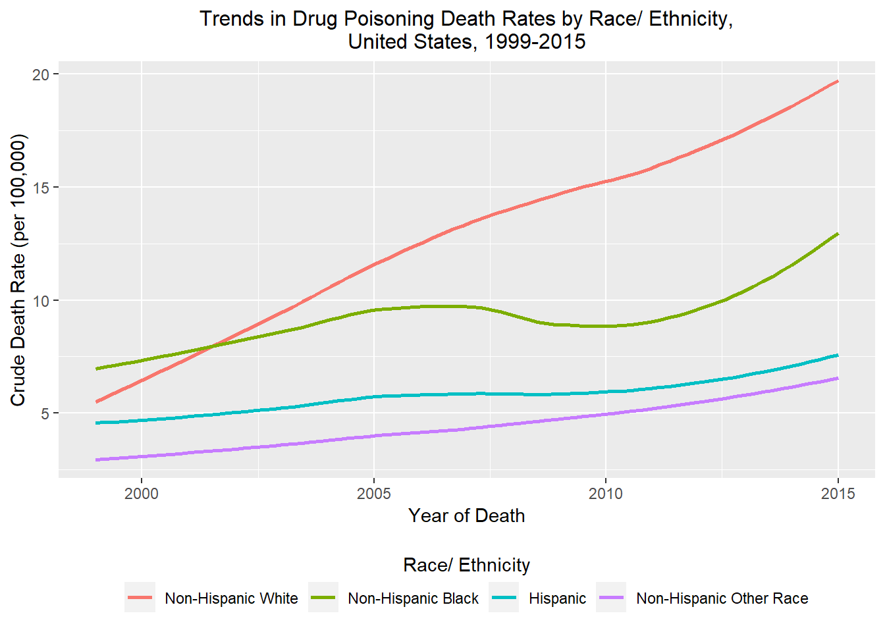

library(tidyverse)
library(lubridate)Data Analysis Exercise
This dataset describes drug poisoning deaths in the United States from 1999 - 2015 by demographic factors, including age group, sex, and a simple race/ethnicity variable (NH White, NH Black, Hispanic). This dataset includes all drug poisoning deaths– intentional(suicide and homicide), unintentional, and those with undetermined intent. While this dataset includes some data at the state-level, further investigation into trends of drug poisoning deaths at the state level is limited due to the fact that the data have been aggregated.
Let’s load the packages we’ll be using in this analysis.
Loading the dataset…
df <- read_csv("dataanalysis_exercise/rawdata/NCHS_-_Drug_Poisoning_Mortality_by_State__United_States.csv")Let’s take a look at the data.
glimpse(df)Rows: 2,703
Columns: 18
$ Year <dbl> 2004, 2012, 2008, 2009,…
$ Sex <chr> "Both Sexes", "Both Sex…
$ Age <chr> "All Ages", "All Ages",…
$ `Race and Hispanic Origin` <chr> "All Races-All Origins"…
$ State <chr> "Texas", "Arizona", "Un…
$ Deaths <dbl> 1813, 1134, 1875, 987, …
$ Population <dbl> 22394023, 6553255, 2432…
$ `Crude Death Rate` <dbl> 8.1, 17.3, 7.7, 14.8, 1…
$ `Standard Error for Crude Rate` <dbl> 0.2, 0.5, 0.2, 0.5, 0.1…
$ `Low Confidence Limit for Crude Rate` <dbl> 7.7, 16.3, 7.4, 13.9, 1…
$ `Upper Confidence Limit for Crude Rate` <dbl> 8.5, 18.3, 8.1, 15.7, 1…
$ `Age-adjusted Rate` <dbl> 8.2, 17.7, 8.4, 14.3, 1…
$ `Standard Error Age-adjusted Rate` <dbl> 0.2, 0.5, 0.2, 0.5, 0.1…
$ `Lower Confidence Limit for Age-adjusted rate` <dbl> 7.8, 16.6, 8.0, 13.4, 1…
$ `Upper Confidence Limit for Age-adjusted Rate` <dbl> 8.5, 18.7, 8.8, 15.2, 1…
$ `State Crude Rate in Range` <chr> "7–9.8", "15.2–41.5", "…
$ `US Crude Rate` <dbl> 9.4, 13.2, 12.0, 12.1, …
$ `US Age-adjusted Rate` <dbl> 9.4, 13.1, 11.9, 11.9, …Let’s remove observations at the state-level by filtering for only observations where ‘state’ is the “United States” and remove columns that we won’t be using in the analysis.
df <- df %>% filter(State == "United States") %>%
select(!c(9:18)) %>%
select(!State)Next, let’s reclass some of our variables. We will also reorder the dataset so that Year is sorted chronologically, then by age group and sex.
df <- df %>%
mutate(Age = factor(Age, level = (c("Less than 15 years", "15-24 years", "25-34 years", "35-44 years", "45-54 years", "55-64 years", "65-74 years", "75+ years", "All Ages")))) %>%
mutate(Sex = as.factor(Sex)) %>%
mutate(`Race and Hispanic Origin` = as.factor(`Race and Hispanic Origin`)) %>%
arrange(Year, Age, Sex)Next, let’s remove observations where rates have been aggregated and remove the columns with NA’s,
df <- df %>% filter(!Age == "All Ages") %>%
filter(!Sex == "Both Sexes")
glimpse(df)Rows: 1,088
Columns: 7
$ Year <dbl> 1999, 1999, 1999, 1999, 1999, 1999, 1999, 1…
$ Sex <fct> Female, Female, Female, Female, Male, Male,…
$ Age <fct> Less than 15 years, Less than 15 years, Les…
$ `Race and Hispanic Origin` <fct> Non-Hispanic Black, All Races-All Origins, …
$ Deaths <dbl> 11, 33, 4, 17, 41, 11, 10, 20, 346, 28, 274…
$ Population <dbl> 4604949, 29254024, 4945811, 18252543, 30701…
$ `Crude Death Rate` <dbl> 0.2, 0.1, 0.1, 0.1, 0.1, 0.2, 0.2, 0.1, 1.8…To make some of these variable easier to work with, let’s rename them.
df <- df %>%
rename(race_eth = `Race and Hispanic Origin`) %>%
rename(crude_dr = `Crude Death Rate`) Let’s see if we can extract some data from other minorities….
all <- df %>% filter(race_eth == "All Races-All Origins")
nhw <- df %>% filter(race_eth == "Non-Hispanic White")
nhb <- df %>% filter(race_eth == "Non-Hispanic Black")
his <- df %>% filter(race_eth == "Hispanic")
all$Other_Deaths <- all$Deaths - nhw$Deaths - nhb$Deaths - his$Deaths
all$Other_Population <- all$Population - nhw$Population - nhb$Population - his$Population
all$Other_crude_dr <- (all$Other_Deaths/all$Other_Population) * 100000
all$Other_crude_dr <- round(all$Other_crude_dr, 1)
other <- all %>% select(Year, Sex, Age, Other_Deaths, Other_Population, Other_crude_dr)
other <- other %>% mutate(race_eth = "Non-Hispanic Other Race") %>%
rename(Deaths = Other_Deaths) %>%
rename(Population = Other_Population) %>%
rename(crude_dr = Other_crude_dr)
new_df <- full_join(nhb,nhw)Joining, by = c("Year", "Sex", "Age", "race_eth", "Deaths", "Population",
"crude_dr")new_df <- full_join(new_df, his)Joining, by = c("Year", "Sex", "Age", "race_eth", "Deaths", "Population",
"crude_dr")new_df <- full_join(new_df, other)Joining, by = c("Year", "Sex", "Age", "race_eth", "Deaths", "Population",
"crude_dr")Before starting data visualization, let’s reorder the race/ethnicity variable by decreasing crude death rate so that our legend for our plots is easier to interpret.
new_df <- new_df %>%
mutate(race_eth = fct_reorder(race_eth, -crude_dr)) saveRDS(new_df, "dataanalysis_exercise/processeddata/exercise4.rds")Let’s clear the environment and start fresh by loading up the RDS file we just saved!
rm(list = ls())
df <- readRDS("dataanalysis_exercise/processeddata/exercise4.rds")Summary Table
knitr::kable(df)| Year | Sex | Age | race_eth | Deaths | Population | crude_dr |
|---|---|---|---|---|---|---|
| 1999 | Female | Less than 15 years | Non-Hispanic Black | 11 | 4604949 | 0.2 |
| 1999 | Male | Less than 15 years | Non-Hispanic Black | 11 | 4748293 | 0.2 |
| 1999 | Female | 15-24 years | Non-Hispanic Black | 26 | 2799428 | 0.9 |
| 1999 | Male | 15-24 years | Non-Hispanic Black | 78 | 2761491 | 2.8 |
| 1999 | Female | 25-34 years | Non-Hispanic Black | 126 | 2752017 | 4.6 |
| 1999 | Male | 25-34 years | Non-Hispanic Black | 302 | 2475549 | 12.2 |
| 1999 | Female | 35-44 years | Non-Hispanic Black | 305 | 2928026 | 10.4 |
| 1999 | Male | 35-44 years | Non-Hispanic Black | 631 | 2582570 | 24.4 |
| 1999 | Female | 45-54 years | Non-Hispanic Black | 177 | 2123125 | 8.3 |
| 1999 | Male | 45-54 years | Non-Hispanic Black | 551 | 1815245 | 30.4 |
| 1999 | Female | 55-64 years | Non-Hispanic Black | 23 | 1289429 | 1.8 |
| 1999 | Male | 55-64 years | Non-Hispanic Black | 117 | 1033331 | 11.3 |
| 1999 | Female | 65-74 years | Non-Hispanic Black | 14 | 943216 | 1.5 |
| 1999 | Male | 65-74 years | Non-Hispanic Black | 25 | 665317 | 3.8 |
| 1999 | Female | 75+ years | Non-Hispanic Black | 19 | 796312 | 2.4 |
| 1999 | Male | 75+ years | Non-Hispanic Black | 9 | 403944 | 2.2 |
| 2000 | Female | Less than 15 years | Non-Hispanic Black | 5 | 4631024 | 0.1 |
| 2000 | Male | Less than 15 years | Non-Hispanic Black | 9 | 4780175 | 0.2 |
| 2000 | Female | 15-24 years | Non-Hispanic Black | 34 | 2831875 | 1.2 |
| 2000 | Male | 15-24 years | Non-Hispanic Black | 60 | 2790462 | 2.2 |
| 2000 | Female | 25-34 years | Non-Hispanic Black | 110 | 2729999 | 4.0 |
| 2000 | Male | 25-34 years | Non-Hispanic Black | 260 | 2461099 | 10.6 |
| 2000 | Female | 35-44 years | Non-Hispanic Black | 321 | 2947420 | 10.9 |
| 2000 | Male | 35-44 years | Non-Hispanic Black | 614 | 2606831 | 23.6 |
| 2000 | Female | 45-54 years | Non-Hispanic Black | 210 | 2206359 | 9.5 |
| 2000 | Male | 45-54 years | Non-Hispanic Black | 565 | 1896006 | 29.8 |
| 2000 | Female | 55-64 years | Non-Hispanic Black | 30 | 1317856 | 2.3 |
| 2000 | Male | 55-64 years | Non-Hispanic Black | 100 | 1060995 | 9.4 |
| 2000 | Female | 65-74 years | Non-Hispanic Black | 10 | 949415 | 1.1 |
| 2000 | Male | 65-74 years | Non-Hispanic Black | 26 | 667889 | 3.9 |
| 2000 | Female | 75+ years | Non-Hispanic Black | 20 | 805126 | 2.5 |
| 2000 | Male | 75+ years | Non-Hispanic Black | 14 | 409278 | 3.4 |
| 2001 | Female | Less than 15 years | Non-Hispanic Black | 8 | 4644725 | 0.2 |
| 2001 | Male | Less than 15 years | Non-Hispanic Black | 16 | 4793608 | 0.3 |
| 2001 | Female | 15-24 years | Non-Hispanic Black | 27 | 2905778 | 0.9 |
| 2001 | Male | 15-24 years | Non-Hispanic Black | 76 | 2889333 | 2.6 |
| 2001 | Female | 25-34 years | Non-Hispanic Black | 116 | 2693115 | 4.3 |
| 2001 | Male | 25-34 years | Non-Hispanic Black | 231 | 2417609 | 9.6 |
| 2001 | Female | 35-44 years | Non-Hispanic Black | 338 | 2967308 | 11.4 |
| 2001 | Male | 35-44 years | Non-Hispanic Black | 606 | 2626810 | 23.1 |
| 2001 | Female | 45-54 years | Non-Hispanic Black | 235 | 2338690 | 10.0 |
| 2001 | Male | 45-54 years | Non-Hispanic Black | 622 | 2018023 | 30.8 |
| 2001 | Female | 55-64 years | Non-Hispanic Black | 40 | 1360000 | 2.9 |
| 2001 | Male | 55-64 years | Non-Hispanic Black | 129 | 1100021 | 11.7 |
| 2001 | Female | 65-74 years | Non-Hispanic Black | 13 | 963086 | 1.3 |
| 2001 | Male | 65-74 years | Non-Hispanic Black | 27 | 684172 | 3.9 |
| 2001 | Female | 75+ years | Non-Hispanic Black | 20 | 819417 | 2.4 |
| 2001 | Male | 75+ years | Non-Hispanic Black | 15 | 416694 | 3.6 |
| 2002 | Female | Less than 15 years | Non-Hispanic Black | 11 | 4646128 | 0.2 |
| 2002 | Male | Less than 15 years | Non-Hispanic Black | 17 | 4795544 | 0.4 |
| 2002 | Female | 15-24 years | Non-Hispanic Black | 31 | 2957737 | 1.0 |
| 2002 | Male | 15-24 years | Non-Hispanic Black | 82 | 2954659 | 2.8 |
| 2002 | Female | 25-34 years | Non-Hispanic Black | 127 | 2687193 | 4.7 |
| 2002 | Male | 25-34 years | Non-Hispanic Black | 272 | 2405197 | 11.3 |
| 2002 | Female | 35-44 years | Non-Hispanic Black | 356 | 2954869 | 12.0 |
| 2002 | Male | 35-44 years | Non-Hispanic Black | 624 | 2613610 | 23.9 |
| 2002 | Female | 45-54 years | Non-Hispanic Black | 326 | 2427025 | 13.4 |
| 2002 | Male | 45-54 years | Non-Hispanic Black | 644 | 2099359 | 30.7 |
| 2002 | Female | 55-64 years | Non-Hispanic Black | 56 | 1428522 | 3.9 |
| 2002 | Male | 55-64 years | Non-Hispanic Black | 174 | 1160749 | 15.0 |
| 2002 | Female | 65-74 years | Non-Hispanic Black | 11 | 972387 | 1.1 |
| 2002 | Male | 65-74 years | Non-Hispanic Black | 24 | 696024 | 3.4 |
| 2002 | Female | 75+ years | Non-Hispanic Black | 15 | 828991 | 1.8 |
| 2002 | Male | 75+ years | Non-Hispanic Black | 13 | 421910 | 3.1 |
| 2003 | Female | Less than 15 years | Non-Hispanic Black | 17 | 4633295 | 0.4 |
| 2003 | Male | Less than 15 years | Non-Hispanic Black | 13 | 4784479 | 0.3 |
| 2003 | Female | 15-24 years | Non-Hispanic Black | 34 | 3011007 | 1.1 |
| 2003 | Male | 15-24 years | Non-Hispanic Black | 70 | 3011309 | 2.3 |
| 2003 | Female | 25-34 years | Non-Hispanic Black | 132 | 2683307 | 4.9 |
| 2003 | Male | 25-34 years | Non-Hispanic Black | 241 | 2390447 | 10.1 |
| 2003 | Female | 35-44 years | Non-Hispanic Black | 365 | 2939713 | 12.4 |
| 2003 | Male | 35-44 years | Non-Hispanic Black | 614 | 2594620 | 23.7 |
| 2003 | Female | 45-54 years | Non-Hispanic Black | 352 | 2508152 | 14.0 |
| 2003 | Male | 45-54 years | Non-Hispanic Black | 664 | 2176117 | 30.5 |
| 2003 | Female | 55-64 years | Non-Hispanic Black | 60 | 1500641 | 4.0 |
| 2003 | Male | 55-64 years | Non-Hispanic Black | 163 | 1224968 | 13.3 |
| 2003 | Female | 65-74 years | Non-Hispanic Black | 18 | 986404 | 1.8 |
| 2003 | Male | 65-74 years | Non-Hispanic Black | 47 | 711137 | 6.6 |
| 2003 | Female | 75+ years | Non-Hispanic Black | 12 | 838934 | 1.4 |
| 2003 | Male | 75+ years | Non-Hispanic Black | 17 | 427675 | 4.0 |
| 2004 | Female | Less than 15 years | Non-Hispanic Black | 18 | 4610496 | 0.4 |
| 2004 | Male | Less than 15 years | Non-Hispanic Black | 14 | 4761825 | 0.3 |
| 2004 | Female | 15-24 years | Non-Hispanic Black | 38 | 3065345 | 1.2 |
| 2004 | Male | 15-24 years | Non-Hispanic Black | 91 | 3083806 | 3.0 |
| 2004 | Female | 25-34 years | Non-Hispanic Black | 132 | 2701278 | 4.9 |
| 2004 | Male | 25-34 years | Non-Hispanic Black | 242 | 2406312 | 10.1 |
| 2004 | Female | 35-44 years | Non-Hispanic Black | 371 | 2918480 | 12.7 |
| 2004 | Male | 35-44 years | Non-Hispanic Black | 534 | 2580376 | 20.7 |
| 2004 | Female | 45-54 years | Non-Hispanic Black | 372 | 2583955 | 14.4 |
| 2004 | Male | 45-54 years | Non-Hispanic Black | 681 | 2248775 | 30.3 |
| 2004 | Female | 55-64 years | Non-Hispanic Black | 84 | 1584608 | 5.3 |
| 2004 | Male | 55-64 years | Non-Hispanic Black | 227 | 1297335 | 17.5 |
| 2004 | Female | 65-74 years | Non-Hispanic Black | 17 | 999456 | 1.7 |
| 2004 | Male | 65-74 years | Non-Hispanic Black | 41 | 725749 | 5.6 |
| 2004 | Female | 75+ years | Non-Hispanic Black | 17 | 848032 | 2.0 |
| 2004 | Male | 75+ years | Non-Hispanic Black | 15 | 433163 | 3.5 |
| 2005 | Female | Less than 15 years | Non-Hispanic Black | 12 | 4570908 | 0.3 |
| 2005 | Male | Less than 15 years | Non-Hispanic Black | 19 | 4722644 | 0.4 |
| 2005 | Female | 15-24 years | Non-Hispanic Black | 42 | 3120765 | 1.3 |
| 2005 | Male | 15-24 years | Non-Hispanic Black | 87 | 3152728 | 2.8 |
| 2005 | Female | 25-34 years | Non-Hispanic Black | 165 | 2714103 | 6.1 |
| 2005 | Male | 25-34 years | Non-Hispanic Black | 308 | 2415631 | 12.8 |
| 2005 | Female | 35-44 years | Non-Hispanic Black | 388 | 2903121 | 13.4 |
| 2005 | Male | 35-44 years | Non-Hispanic Black | 563 | 2567934 | 21.9 |
| 2005 | Female | 45-54 years | Non-Hispanic Black | 417 | 2659853 | 15.7 |
| 2005 | Male | 45-54 years | Non-Hispanic Black | 815 | 2321969 | 35.1 |
| 2005 | Female | 55-64 years | Non-Hispanic Black | 109 | 1674866 | 6.5 |
| 2005 | Male | 55-64 years | Non-Hispanic Black | 300 | 1377749 | 21.8 |
| 2005 | Female | 65-74 years | Non-Hispanic Black | 18 | 1018383 | 1.8 |
| 2005 | Male | 65-74 years | Non-Hispanic Black | 53 | 743974 | 7.1 |
| 2005 | Female | 75+ years | Non-Hispanic Black | 15 | 862943 | 1.7 |
| 2005 | Male | 75+ years | Non-Hispanic Black | 11 | 443165 | 2.5 |
| 2006 | Female | Less than 15 years | Non-Hispanic Black | 18 | 4544767 | 0.4 |
| 2006 | Male | Less than 15 years | Non-Hispanic Black | 19 | 4695057 | 0.4 |
| 2006 | Female | 15-24 years | Non-Hispanic Black | 51 | 3171817 | 1.6 |
| 2006 | Male | 15-24 years | Non-Hispanic Black | 103 | 3215782 | 3.2 |
| 2006 | Female | 25-34 years | Non-Hispanic Black | 131 | 2726529 | 4.8 |
| 2006 | Male | 25-34 years | Non-Hispanic Black | 379 | 2432795 | 15.6 |
| 2006 | Female | 35-44 years | Non-Hispanic Black | 404 | 2900185 | 13.9 |
| 2006 | Male | 35-44 years | Non-Hispanic Black | 728 | 2568722 | 28.3 |
| 2006 | Female | 45-54 years | Non-Hispanic Black | 467 | 2725618 | 17.1 |
| 2006 | Male | 45-54 years | Non-Hispanic Black | 985 | 2386684 | 41.3 |
| 2006 | Female | 55-64 years | Non-Hispanic Black | 132 | 1766706 | 7.5 |
| 2006 | Male | 55-64 years | Non-Hispanic Black | 375 | 1457875 | 25.7 |
| 2006 | Female | 65-74 years | Non-Hispanic Black | 21 | 1041139 | 2.0 |
| 2006 | Male | 65-74 years | Non-Hispanic Black | 60 | 762625 | 7.9 |
| 2006 | Female | 75+ years | Non-Hispanic Black | 27 | 873214 | 3.1 |
| 2006 | Male | 75+ years | Non-Hispanic Black | 12 | 449980 | 2.7 |
| 2007 | Female | Less than 15 years | Non-Hispanic Black | 17 | 4537392 | 0.4 |
| 2007 | Male | Less than 15 years | Non-Hispanic Black | 23 | 4690178 | 0.5 |
| 2007 | Female | 15-24 years | Non-Hispanic Black | 47 | 3220985 | 1.5 |
| 2007 | Male | 15-24 years | Non-Hispanic Black | 108 | 3262016 | 3.3 |
| 2007 | Female | 25-34 years | Non-Hispanic Black | 147 | 2748019 | 5.3 |
| 2007 | Male | 25-34 years | Non-Hispanic Black | 290 | 2460943 | 11.8 |
| 2007 | Female | 35-44 years | Non-Hispanic Black | 347 | 2885371 | 12.0 |
| 2007 | Male | 35-44 years | Non-Hispanic Black | 550 | 2558919 | 21.5 |
| 2007 | Female | 45-54 years | Non-Hispanic Black | 498 | 2788991 | 17.9 |
| 2007 | Male | 45-54 years | Non-Hispanic Black | 854 | 2451857 | 34.8 |
| 2007 | Female | 55-64 years | Non-Hispanic Black | 168 | 1854228 | 9.1 |
| 2007 | Male | 55-64 years | Non-Hispanic Black | 396 | 1532433 | 25.8 |
| 2007 | Female | 65-74 years | Non-Hispanic Black | 24 | 1065530 | 2.3 |
| 2007 | Male | 65-74 years | Non-Hispanic Black | 65 | 782797 | 8.3 |
| 2007 | Female | 75+ years | Non-Hispanic Black | 25 | 886220 | 2.8 |
| 2007 | Male | 75+ years | Non-Hispanic Black | 14 | 458820 | 3.1 |
| 2008 | Female | Less than 15 years | Non-Hispanic Black | 20 | 4536523 | 0.4 |
| 2008 | Male | Less than 15 years | Non-Hispanic Black | 15 | 4687984 | 0.3 |
| 2008 | Female | 15-24 years | Non-Hispanic Black | 46 | 3267835 | 1.4 |
| 2008 | Male | 15-24 years | Non-Hispanic Black | 87 | 3302084 | 2.6 |
| 2008 | Female | 25-34 years | Non-Hispanic Black | 127 | 2775106 | 4.6 |
| 2008 | Male | 25-34 years | Non-Hispanic Black | 248 | 2502166 | 9.9 |
| 2008 | Female | 35-44 years | Non-Hispanic Black | 293 | 2858721 | 10.2 |
| 2008 | Male | 35-44 years | Non-Hispanic Black | 477 | 2539823 | 18.8 |
| 2008 | Female | 45-54 years | Non-Hispanic Black | 433 | 2847158 | 15.2 |
| 2008 | Male | 45-54 years | Non-Hispanic Black | 721 | 2509773 | 28.7 |
| 2008 | Female | 55-64 years | Non-Hispanic Black | 160 | 1938978 | 8.3 |
| 2008 | Male | 55-64 years | Non-Hispanic Black | 392 | 1606901 | 24.4 |
| 2008 | Female | 65-74 years | Non-Hispanic Black | 33 | 1097809 | 3.0 |
| 2008 | Male | 65-74 years | Non-Hispanic Black | 65 | 809574 | 8.0 |
| 2008 | Female | 75+ years | Non-Hispanic Black | 12 | 901800 | 1.3 |
| 2008 | Male | 75+ years | Non-Hispanic Black | 18 | 469498 | 3.8 |
| 2009 | Female | Less than 15 years | Non-Hispanic Black | 10 | 4541176 | 0.2 |
| 2009 | Male | Less than 15 years | Non-Hispanic Black | 14 | 4693086 | 0.3 |
| 2009 | Female | 15-24 years | Non-Hispanic Black | 49 | 3304624 | 1.5 |
| 2009 | Male | 15-24 years | Non-Hispanic Black | 76 | 3329214 | 2.3 |
| 2009 | Female | 25-34 years | Non-Hispanic Black | 138 | 2812534 | 4.9 |
| 2009 | Male | 25-34 years | Non-Hispanic Black | 262 | 2551525 | 10.3 |
| 2009 | Female | 35-44 years | Non-Hispanic Black | 273 | 2817340 | 9.7 |
| 2009 | Male | 35-44 years | Non-Hispanic Black | 429 | 2506688 | 17.1 |
| 2009 | Female | 45-54 years | Non-Hispanic Black | 490 | 2896554 | 16.9 |
| 2009 | Male | 45-54 years | Non-Hispanic Black | 697 | 2559687 | 27.2 |
| 2009 | Female | 55-64 years | Non-Hispanic Black | 173 | 2037954 | 8.5 |
| 2009 | Male | 55-64 years | Non-Hispanic Black | 435 | 1692524 | 25.7 |
| 2009 | Female | 65-74 years | Non-Hispanic Black | 15 | 1129394 | 1.3 |
| 2009 | Male | 65-74 years | Non-Hispanic Black | 58 | 836228 | 6.9 |
| 2009 | Female | 75+ years | Non-Hispanic Black | 25 | 916391 | 2.7 |
| 2009 | Male | 75+ years | Non-Hispanic Black | 15 | 479896 | 3.1 |
| 2010 | Female | Less than 15 years | Non-Hispanic Black | 7 | 4544997 | 0.2 |
| 2010 | Male | Less than 15 years | Non-Hispanic Black | 17 | 4698593 | 0.4 |
| 2010 | Female | 15-24 years | Non-Hispanic Black | 56 | 3319205 | 1.7 |
| 2010 | Male | 15-24 years | Non-Hispanic Black | 100 | 3336709 | 3.0 |
| 2010 | Female | 25-34 years | Non-Hispanic Black | 160 | 2839351 | 5.6 |
| 2010 | Male | 25-34 years | Non-Hispanic Black | 284 | 2587488 | 11.0 |
| 2010 | Female | 35-44 years | Non-Hispanic Black | 277 | 2788664 | 9.9 |
| 2010 | Male | 35-44 years | Non-Hispanic Black | 346 | 2483766 | 13.9 |
| 2010 | Female | 45-54 years | Non-Hispanic Black | 460 | 2925567 | 15.7 |
| 2010 | Male | 45-54 years | Non-Hispanic Black | 626 | 2590315 | 24.2 |
| 2010 | Female | 55-64 years | Non-Hispanic Black | 209 | 2121490 | 9.9 |
| 2010 | Male | 55-64 years | Non-Hispanic Black | 442 | 1767574 | 25.0 |
| 2010 | Female | 65-74 years | Non-Hispanic Black | 31 | 1154227 | 2.7 |
| 2010 | Male | 65-74 years | Non-Hispanic Black | 72 | 856880 | 8.4 |
| 2010 | Female | 75+ years | Non-Hispanic Black | 17 | 931372 | 1.8 |
| 2010 | Male | 75+ years | Non-Hispanic Black | 18 | 490935 | 3.7 |
| 2011 | Female | Less than 15 years | Non-Hispanic Black | 12 | 4544534 | 0.3 |
| 2011 | Male | Less than 15 years | Non-Hispanic Black | 21 | 4704260 | 0.4 |
| 2011 | Female | 15-24 years | Non-Hispanic Black | 49 | 3345742 | 1.5 |
| 2011 | Male | 15-24 years | Non-Hispanic Black | 115 | 3392008 | 3.4 |
| 2011 | Female | 25-34 years | Non-Hispanic Black | 193 | 2890354 | 6.7 |
| 2011 | Male | 25-34 years | Non-Hispanic Black | 296 | 2654382 | 11.2 |
| 2011 | Female | 35-44 years | Non-Hispanic Black | 286 | 2754761 | 10.4 |
| 2011 | Male | 35-44 years | Non-Hispanic Black | 418 | 2450393 | 17.1 |
| 2011 | Female | 45-54 years | Non-Hispanic Black | 427 | 2929318 | 14.6 |
| 2011 | Male | 45-54 years | Non-Hispanic Black | 669 | 2593939 | 25.8 |
| 2011 | Female | 55-64 years | Non-Hispanic Black | 255 | 2249214 | 11.3 |
| 2011 | Male | 55-64 years | Non-Hispanic Black | 503 | 1875124 | 26.8 |
| 2011 | Female | 65-74 years | Non-Hispanic Black | 32 | 1196557 | 2.7 |
| 2011 | Male | 65-74 years | Non-Hispanic Black | 67 | 892727 | 7.5 |
| 2011 | Female | 75+ years | Non-Hispanic Black | 25 | 959656 | 2.6 |
| 2011 | Male | 75+ years | Non-Hispanic Black | 15 | 511927 | 2.9 |
| 2012 | Female | Less than 15 years | Non-Hispanic Black | 11 | 4543314 | 0.2 |
| 2012 | Male | Less than 15 years | Non-Hispanic Black | 16 | 4703728 | 0.3 |
| 2012 | Female | 15-24 years | Non-Hispanic Black | 58 | 3366865 | 1.7 |
| 2012 | Male | 15-24 years | Non-Hispanic Black | 118 | 3431874 | 3.4 |
| 2012 | Female | 25-34 years | Non-Hispanic Black | 175 | 2932865 | 6.0 |
| 2012 | Male | 25-34 years | Non-Hispanic Black | 323 | 2716569 | 11.9 |
| 2012 | Female | 35-44 years | Non-Hispanic Black | 292 | 2754386 | 10.6 |
| 2012 | Male | 35-44 years | Non-Hispanic Black | 397 | 2451581 | 16.2 |
| 2012 | Female | 45-54 years | Non-Hispanic Black | 468 | 2913712 | 16.1 |
| 2012 | Male | 45-54 years | Non-Hispanic Black | 671 | 2580039 | 26.0 |
| 2012 | Female | 55-64 years | Non-Hispanic Black | 251 | 2332305 | 10.8 |
| 2012 | Male | 55-64 years | Non-Hispanic Black | 546 | 1945605 | 28.1 |
| 2012 | Female | 65-74 years | Non-Hispanic Black | 32 | 1260777 | 2.5 |
| 2012 | Male | 65-74 years | Non-Hispanic Black | 87 | 944880 | 9.2 |
| 2012 | Female | 75+ years | Non-Hispanic Black | 23 | 983181 | 2.3 |
| 2012 | Male | 75+ years | Non-Hispanic Black | 20 | 529707 | 3.8 |
| 2013 | Female | Less than 15 years | Non-Hispanic Black | 13 | 4539620 | 0.3 |
| 2013 | Male | Less than 15 years | Non-Hispanic Black | 12 | 4696131 | 0.3 |
| 2013 | Female | 15-24 years | Non-Hispanic Black | 59 | 3372635 | 1.7 |
| 2013 | Male | 15-24 years | Non-Hispanic Black | 128 | 3450319 | 3.7 |
| 2013 | Female | 25-34 years | Non-Hispanic Black | 194 | 2981135 | 6.5 |
| 2013 | Male | 25-34 years | Non-Hispanic Black | 376 | 2784499 | 13.5 |
| 2013 | Female | 35-44 years | Non-Hispanic Black | 282 | 2756591 | 10.2 |
| 2013 | Male | 35-44 years | Non-Hispanic Black | 466 | 2454816 | 19.0 |
| 2013 | Female | 45-54 years | Non-Hispanic Black | 475 | 2896386 | 16.4 |
| 2013 | Male | 45-54 years | Non-Hispanic Black | 706 | 2561168 | 27.6 |
| 2013 | Female | 55-64 years | Non-Hispanic Black | 298 | 2405774 | 12.4 |
| 2013 | Male | 55-64 years | Non-Hispanic Black | 703 | 2011942 | 34.9 |
| 2013 | Female | 65-74 years | Non-Hispanic Black | 45 | 1331246 | 3.4 |
| 2013 | Male | 65-74 years | Non-Hispanic Black | 137 | 1001955 | 13.7 |
| 2013 | Female | 75+ years | Non-Hispanic Black | 18 | 1008427 | 1.8 |
| 2013 | Male | 75+ years | Non-Hispanic Black | 16 | 549442 | 2.9 |
| 2014 | Female | Less than 15 years | Non-Hispanic Black | 21 | 4547032 | 0.5 |
| 2014 | Male | Less than 15 years | Non-Hispanic Black | 18 | 4698446 | 0.4 |
| 2014 | Female | 15-24 years | Non-Hispanic Black | 77 | 3367586 | 2.3 |
| 2014 | Male | 15-24 years | Non-Hispanic Black | 140 | 3458870 | 4.0 |
| 2014 | Female | 25-34 years | Non-Hispanic Black | 218 | 3055628 | 7.1 |
| 2014 | Male | 25-34 years | Non-Hispanic Black | 431 | 2879162 | 15.0 |
| 2014 | Female | 35-44 years | Non-Hispanic Black | 343 | 2780848 | 12.3 |
| 2014 | Male | 35-44 years | Non-Hispanic Black | 490 | 2478026 | 19.8 |
| 2014 | Female | 45-54 years | Non-Hispanic Black | 474 | 2875907 | 16.5 |
| 2014 | Male | 45-54 years | Non-Hispanic Black | 804 | 2543801 | 31.6 |
| 2014 | Female | 55-64 years | Non-Hispanic Black | 368 | 2479158 | 14.8 |
| 2014 | Male | 55-64 years | Non-Hispanic Black | 694 | 2076375 | 33.4 |
| 2014 | Female | 65-74 years | Non-Hispanic Black | 54 | 1409606 | 3.8 |
| 2014 | Male | 65-74 years | Non-Hispanic Black | 147 | 1059696 | 13.9 |
| 2014 | Female | 75+ years | Non-Hispanic Black | 24 | 1034688 | 2.3 |
| 2014 | Male | 75+ years | Non-Hispanic Black | 20 | 571690 | 3.5 |
| 2015 | Female | Less than 15 years | Non-Hispanic Black | 13 | 4544696 | 0.3 |
| 2015 | Male | Less than 15 years | Non-Hispanic Black | 20 | 4692766 | 0.4 |
| 2015 | Female | 15-24 years | Non-Hispanic Black | 93 | 3342283 | 2.8 |
| 2015 | Male | 15-24 years | Non-Hispanic Black | 182 | 3445451 | 5.3 |
| 2015 | Female | 25-34 years | Non-Hispanic Black | 244 | 3127225 | 7.8 |
| 2015 | Male | 25-34 years | Non-Hispanic Black | 539 | 2973697 | 18.1 |
| 2015 | Female | 35-44 years | Non-Hispanic Black | 353 | 2800164 | 12.6 |
| 2015 | Male | 35-44 years | Non-Hispanic Black | 676 | 2498259 | 27.1 |
| 2015 | Female | 45-54 years | Non-Hispanic Black | 539 | 2863655 | 18.8 |
| 2015 | Male | 45-54 years | Non-Hispanic Black | 866 | 2531669 | 34.2 |
| 2015 | Female | 55-64 years | Non-Hispanic Black | 362 | 2549645 | 14.2 |
| 2015 | Male | 55-64 years | Non-Hispanic Black | 870 | 2139272 | 40.7 |
| 2015 | Female | 65-74 years | Non-Hispanic Black | 72 | 1488908 | 4.8 |
| 2015 | Male | 65-74 years | Non-Hispanic Black | 199 | 1121377 | 17.7 |
| 2015 | Female | 75+ years | Non-Hispanic Black | 16 | 1065020 | 1.5 |
| 2015 | Male | 75+ years | Non-Hispanic Black | 26 | 593396 | 4.4 |
| 1999 | Female | Less than 15 years | Non-Hispanic White | 17 | 18252543 | 0.1 |
| 1999 | Male | Less than 15 years | Non-Hispanic White | 20 | 19270575 | 0.1 |
| 1999 | Female | 15-24 years | Non-Hispanic White | 274 | 12112545 | 2.3 |
| 1999 | Male | 15-24 years | Non-Hispanic White | 679 | 12582565 | 5.4 |
| 1999 | Female | 25-34 years | Non-Hispanic White | 690 | 13048454 | 5.3 |
| 1999 | Male | 25-34 years | Non-Hispanic White | 1595 | 13216259 | 12.1 |
| 1999 | Female | 35-44 years | Non-Hispanic White | 1500 | 16199105 | 9.3 |
| 1999 | Male | 35-44 years | Non-Hispanic White | 3062 | 16212393 | 18.9 |
| 1999 | Female | 45-54 years | Non-Hispanic White | 1076 | 14112467 | 7.6 |
| 1999 | Male | 45-54 years | Non-Hispanic White | 1852 | 13883338 | 13.3 |
| 1999 | Female | 55-64 years | Non-Hispanic White | 380 | 9721783 | 3.9 |
| 1999 | Male | 55-64 years | Non-Hispanic White | 370 | 9153776 | 4.0 |
| 1999 | Female | 65-74 years | Non-Hispanic White | 187 | 8267535 | 2.3 |
| 1999 | Male | 65-74 years | Non-Hispanic White | 173 | 6918262 | 2.5 |
| 1999 | Female | 75+ years | Non-Hispanic White | 290 | 8984152 | 3.2 |
| 1999 | Male | 75+ years | Non-Hispanic White | 161 | 5218366 | 3.1 |
| 2000 | Female | Less than 15 years | Non-Hispanic White | 18 | 18148729 | 0.1 |
| 2000 | Male | Less than 15 years | Non-Hispanic White | 28 | 19161529 | 0.1 |
| 2000 | Female | 15-24 years | Non-Hispanic White | 298 | 12183374 | 2.4 |
| 2000 | Male | 15-24 years | Non-Hispanic White | 878 | 12628081 | 7.0 |
| 2000 | Female | 25-34 years | Non-Hispanic White | 704 | 12777534 | 5.5 |
| 2000 | Male | 25-34 years | Non-Hispanic White | 1635 | 12957710 | 12.6 |
| 2000 | Female | 35-44 years | Non-Hispanic White | 1608 | 16089038 | 10.0 |
| 2000 | Male | 35-44 years | Non-Hispanic White | 3237 | 16087608 | 20.1 |
| 2000 | Female | 45-54 years | Non-Hispanic White | 1175 | 14446309 | 8.1 |
| 2000 | Male | 45-54 years | Non-Hispanic White | 2045 | 14222875 | 14.4 |
| 2000 | Female | 55-64 years | Non-Hispanic White | 433 | 9879258 | 4.4 |
| 2000 | Male | 55-64 years | Non-Hispanic White | 359 | 9311676 | 3.9 |
| 2000 | Female | 65-74 years | Non-Hispanic White | 179 | 8187905 | 2.2 |
| 2000 | Male | 65-74 years | Non-Hispanic White | 134 | 6894226 | 1.9 |
| 2000 | Female | 75+ years | Non-Hispanic White | 264 | 9061788 | 2.9 |
| 2000 | Male | 75+ years | Non-Hispanic White | 172 | 5287044 | 3.3 |
| 2001 | Female | Less than 15 years | Non-Hispanic White | 22 | 17952995 | 0.1 |
| 2001 | Male | Less than 15 years | Non-Hispanic White | 33 | 18940874 | 0.2 |
| 2001 | Female | 15-24 years | Non-Hispanic White | 353 | 12410190 | 2.8 |
| 2001 | Male | 15-24 years | Non-Hispanic White | 1046 | 12886933 | 8.1 |
| 2001 | Female | 25-34 years | Non-Hispanic White | 790 | 12410000 | 6.4 |
| 2001 | Male | 25-34 years | Non-Hispanic White | 1813 | 12599128 | 14.4 |
| 2001 | Female | 35-44 years | Non-Hispanic White | 1857 | 15825658 | 11.7 |
| 2001 | Male | 35-44 years | Non-Hispanic White | 3485 | 15835426 | 22.0 |
| 2001 | Female | 45-54 years | Non-Hispanic White | 1488 | 14981593 | 9.9 |
| 2001 | Male | 45-54 years | Non-Hispanic White | 2362 | 14751938 | 16.0 |
| 2001 | Female | 55-64 years | Non-Hispanic White | 483 | 10148279 | 4.8 |
| 2001 | Male | 55-64 years | Non-Hispanic White | 434 | 9595171 | 4.5 |
| 2001 | Female | 65-74 years | Non-Hispanic White | 185 | 8081347 | 2.3 |
| 2001 | Male | 65-74 years | Non-Hispanic White | 176 | 6874127 | 2.6 |
| 2001 | Female | 75+ years | Non-Hispanic White | 267 | 9142335 | 2.9 |
| 2001 | Male | 75+ years | Non-Hispanic White | 151 | 5406677 | 2.8 |
| 2002 | Female | Less than 15 years | Non-Hispanic White | 24 | 17779985 | 0.1 |
| 2002 | Male | Less than 15 years | Non-Hispanic White | 29 | 18752508 | 0.2 |
| 2002 | Female | 15-24 years | Non-Hispanic White | 472 | 12531301 | 3.8 |
| 2002 | Male | 15-24 years | Non-Hispanic White | 1262 | 13011345 | 9.7 |
| 2002 | Female | 25-34 years | Non-Hispanic White | 972 | 12199475 | 8.0 |
| 2002 | Male | 25-34 years | Non-Hispanic White | 2241 | 12382023 | 18.1 |
| 2002 | Female | 35-44 years | Non-Hispanic White | 2292 | 15497239 | 14.8 |
| 2002 | Male | 35-44 years | Non-Hispanic White | 3967 | 15506391 | 25.6 |
| 2002 | Female | 45-54 years | Non-Hispanic White | 2011 | 15057598 | 13.4 |
| 2002 | Male | 45-54 years | Non-Hispanic White | 2963 | 14822954 | 20.0 |
| 2002 | Female | 55-64 years | Non-Hispanic White | 631 | 10779132 | 5.9 |
| 2002 | Male | 55-64 years | Non-Hispanic White | 624 | 10223846 | 6.1 |
| 2002 | Female | 65-74 years | Non-Hispanic White | 242 | 8005736 | 3.0 |
| 2002 | Male | 65-74 years | Non-Hispanic White | 179 | 6858224 | 2.6 |
| 2002 | Female | 75+ years | Non-Hispanic White | 297 | 9191891 | 3.2 |
| 2002 | Male | 75+ years | Non-Hispanic White | 195 | 5502334 | 3.5 |
| 2003 | Female | Less than 15 years | Non-Hispanic White | 16 | 17603717 | 0.1 |
| 2003 | Male | Less than 15 years | Non-Hispanic White | 38 | 18562010 | 0.2 |
| 2003 | Female | 15-24 years | Non-Hispanic White | 531 | 12623903 | 4.2 |
| 2003 | Male | 15-24 years | Non-Hispanic White | 1578 | 13083988 | 12.1 |
| 2003 | Female | 25-34 years | Non-Hispanic White | 1107 | 12041971 | 9.2 |
| 2003 | Male | 25-34 years | Non-Hispanic White | 2412 | 12185166 | 19.8 |
| 2003 | Female | 35-44 years | Non-Hispanic White | 2441 | 15133629 | 16.1 |
| 2003 | Male | 35-44 years | Non-Hispanic White | 4092 | 15136427 | 27.0 |
| 2003 | Female | 45-54 years | Non-Hispanic White | 2273 | 15250861 | 14.9 |
| 2003 | Male | 45-54 years | Non-Hispanic White | 3417 | 15009671 | 22.8 |
| 2003 | Female | 55-64 years | Non-Hispanic White | 776 | 11256350 | 6.9 |
| 2003 | Male | 55-64 years | Non-Hispanic White | 787 | 10698998 | 7.4 |
| 2003 | Female | 65-74 years | Non-Hispanic White | 250 | 7982204 | 3.1 |
| 2003 | Male | 65-74 years | Non-Hispanic White | 173 | 6885928 | 2.5 |
| 2003 | Female | 75+ years | Non-Hispanic White | 296 | 9237057 | 3.2 |
| 2003 | Male | 75+ years | Non-Hispanic White | 184 | 5597606 | 3.3 |
| 2004 | Female | Less than 15 years | Non-Hispanic White | 39 | 17418164 | 0.2 |
| 2004 | Male | Less than 15 years | Non-Hispanic White | 33 | 18362765 | 0.2 |
| 2004 | Female | 15-24 years | Non-Hispanic White | 570 | 12691493 | 4.5 |
| 2004 | Male | 15-24 years | Non-Hispanic White | 1780 | 13190880 | 13.5 |
| 2004 | Female | 25-34 years | Non-Hispanic White | 1144 | 11905261 | 9.6 |
| 2004 | Male | 25-34 years | Non-Hispanic White | 2620 | 12048924 | 21.7 |
| 2004 | Female | 35-44 years | Non-Hispanic White | 2657 | 14817415 | 17.9 |
| 2004 | Male | 35-44 years | Non-Hispanic White | 4075 | 14844348 | 27.5 |
| 2004 | Female | 45-54 years | Non-Hispanic White | 2623 | 15435849 | 17.0 |
| 2004 | Male | 45-54 years | Non-Hispanic White | 3774 | 15193541 | 24.8 |
| 2004 | Female | 55-64 years | Non-Hispanic White | 911 | 11714590 | 7.8 |
| 2004 | Male | 55-64 years | Non-Hispanic White | 864 | 11150088 | 7.7 |
| 2004 | Female | 65-74 years | Non-Hispanic White | 266 | 7990056 | 3.3 |
| 2004 | Male | 65-74 years | Non-Hispanic White | 182 | 6935888 | 2.6 |
| 2004 | Female | 75+ years | Non-Hispanic White | 303 | 9248072 | 3.3 |
| 2004 | Male | 75+ years | Non-Hispanic White | 180 | 5672569 | 3.2 |
| 2005 | Female | Less than 15 years | Non-Hispanic White | 25 | 17181599 | 0.1 |
| 2005 | Male | Less than 15 years | Non-Hispanic White | 38 | 18105399 | 0.2 |
| 2005 | Female | 15-24 years | Non-Hispanic White | 603 | 12719326 | 4.7 |
| 2005 | Male | 15-24 years | Non-Hispanic White | 1851 | 13260208 | 14.0 |
| 2005 | Female | 25-34 years | Non-Hispanic White | 1333 | 11779944 | 11.3 |
| 2005 | Male | 25-34 years | Non-Hispanic White | 2883 | 11888597 | 24.3 |
| 2005 | Female | 35-44 years | Non-Hispanic White | 2601 | 14529936 | 17.9 |
| 2005 | Male | 35-44 years | Non-Hispanic White | 4086 | 14564712 | 28.1 |
| 2005 | Female | 45-54 years | Non-Hispanic White | 2934 | 15632708 | 18.8 |
| 2005 | Male | 45-54 years | Non-Hispanic White | 4078 | 15391892 | 26.5 |
| 2005 | Female | 55-64 years | Non-Hispanic White | 1031 | 12166744 | 8.5 |
| 2005 | Male | 55-64 years | Non-Hispanic White | 1125 | 11601673 | 9.7 |
| 2005 | Female | 65-74 years | Non-Hispanic White | 279 | 8012963 | 3.5 |
| 2005 | Male | 65-74 years | Non-Hispanic White | 204 | 6999954 | 2.9 |
| 2005 | Female | 75+ years | Non-Hispanic White | 302 | 9281264 | 3.3 |
| 2005 | Male | 75+ years | Non-Hispanic White | 226 | 5764065 | 3.9 |
| 2006 | Female | Less than 15 years | Non-Hispanic White | 33 | 16976468 | 0.2 |
| 2006 | Male | Less than 15 years | Non-Hispanic White | 42 | 17888083 | 0.2 |
| 2006 | Female | 15-24 years | Non-Hispanic White | 687 | 12699782 | 5.4 |
| 2006 | Male | 15-24 years | Non-Hispanic White | 2305 | 13273041 | 17.4 |
| 2006 | Female | 25-34 years | Non-Hispanic White | 1553 | 11702904 | 13.3 |
| 2006 | Male | 25-34 years | Non-Hispanic White | 3552 | 11805215 | 30.1 |
| 2006 | Female | 35-44 years | Non-Hispanic White | 2792 | 14229546 | 19.6 |
| 2006 | Male | 35-44 years | Non-Hispanic White | 4481 | 14283490 | 31.4 |
| 2006 | Female | 45-54 years | Non-Hispanic White | 3367 | 15803164 | 21.3 |
| 2006 | Male | 45-54 years | Non-Hispanic White | 4767 | 15562026 | 30.6 |
| 2006 | Female | 55-64 years | Non-Hispanic White | 1255 | 12603185 | 10.0 |
| 2006 | Male | 55-64 years | Non-Hispanic White | 1324 | 12028705 | 11.0 |
| 2006 | Female | 65-74 years | Non-Hispanic White | 327 | 8092906 | 4.0 |
| 2006 | Male | 65-74 years | Non-Hispanic White | 220 | 7105898 | 3.1 |
| 2006 | Female | 75+ years | Non-Hispanic White | 342 | 9302541 | 3.7 |
| 2006 | Male | 75+ years | Non-Hispanic White | 218 | 5843442 | 3.7 |
| 2007 | Female | Less than 15 years | Non-Hispanic White | 35 | 16818001 | 0.2 |
| 2007 | Male | Less than 15 years | Non-Hispanic White | 45 | 17719532 | 0.3 |
| 2007 | Female | 15-24 years | Non-Hispanic White | 730 | 12665950 | 5.8 |
| 2007 | Male | 15-24 years | Non-Hispanic White | 2270 | 13228673 | 17.2 |
| 2007 | Female | 25-34 years | Non-Hispanic White | 1683 | 11712593 | 14.4 |
| 2007 | Male | 25-34 years | Non-Hispanic White | 3852 | 11821248 | 32.6 |
| 2007 | Female | 35-44 years | Non-Hispanic White | 2861 | 13860838 | 20.6 |
| 2007 | Male | 35-44 years | Non-Hispanic White | 4494 | 13929550 | 32.3 |
| 2007 | Female | 45-54 years | Non-Hispanic White | 3939 | 15902406 | 24.8 |
| 2007 | Male | 45-54 years | Non-Hispanic White | 4894 | 15658731 | 31.3 |
| 2007 | Female | 55-64 years | Non-Hispanic White | 1523 | 12996990 | 11.7 |
| 2007 | Male | 55-64 years | Non-Hispanic White | 1664 | 12417301 | 13.4 |
| 2007 | Female | 65-74 years | Non-Hispanic White | 353 | 8257802 | 4.3 |
| 2007 | Male | 65-74 years | Non-Hispanic White | 298 | 7287583 | 4.1 |
| 2007 | Female | 75+ years | Non-Hispanic White | 354 | 9305570 | 3.8 |
| 2007 | Male | 75+ years | Non-Hispanic White | 220 | 5909653 | 3.7 |
| 2008 | Female | Less than 15 years | Non-Hispanic White | 28 | 16687391 | 0.2 |
| 2008 | Male | Less than 15 years | Non-Hispanic White | 51 | 17572957 | 0.3 |
| 2008 | Female | 15-24 years | Non-Hispanic White | 702 | 12603043 | 5.6 |
| 2008 | Male | 15-24 years | Non-Hispanic White | 2271 | 13147953 | 17.3 |
| 2008 | Female | 25-34 years | Non-Hispanic White | 1655 | 11797766 | 14.0 |
| 2008 | Male | 25-34 years | Non-Hispanic White | 3932 | 11942598 | 32.9 |
| 2008 | Female | 35-44 years | Non-Hispanic White | 2965 | 13436428 | 22.1 |
| 2008 | Male | 35-44 years | Non-Hispanic White | 4271 | 13518133 | 31.6 |
| 2008 | Female | 45-54 years | Non-Hispanic White | 4044 | 15937153 | 25.4 |
| 2008 | Male | 45-54 years | Non-Hispanic White | 5149 | 15693928 | 32.8 |
| 2008 | Female | 55-64 years | Non-Hispanic White | 1699 | 13302890 | 12.8 |
| 2008 | Male | 55-64 years | Non-Hispanic White | 1842 | 12714018 | 14.5 |
| 2008 | Female | 65-74 years | Non-Hispanic White | 428 | 8569649 | 5.0 |
| 2008 | Male | 65-74 years | Non-Hispanic White | 346 | 7603312 | 4.6 |
| 2008 | Female | 75+ years | Non-Hispanic White | 365 | 9292354 | 3.9 |
| 2008 | Male | 75+ years | Non-Hispanic White | 217 | 5964224 | 3.6 |
| 2009 | Female | Less than 15 years | Non-Hispanic White | 37 | 16552704 | 0.2 |
| 2009 | Male | Less than 15 years | Non-Hispanic White | 34 | 17425357 | 0.2 |
| 2009 | Female | 15-24 years | Non-Hispanic White | 718 | 12521165 | 5.7 |
| 2009 | Male | 15-24 years | Non-Hispanic White | 2135 | 13041990 | 16.4 |
| 2009 | Female | 25-34 years | Non-Hispanic White | 1754 | 11903782 | 14.7 |
| 2009 | Male | 25-34 years | Non-Hispanic White | 4098 | 12079843 | 33.9 |
| 2009 | Female | 35-44 years | Non-Hispanic White | 2773 | 12997405 | 21.3 |
| 2009 | Male | 35-44 years | Non-Hispanic White | 4125 | 13088015 | 31.5 |
| 2009 | Female | 45-54 years | Non-Hispanic White | 4144 | 15919221 | 26.0 |
| 2009 | Male | 45-54 years | Non-Hispanic White | 5103 | 15681414 | 32.5 |
| 2009 | Female | 55-64 years | Non-Hispanic White | 1851 | 13703966 | 13.5 |
| 2009 | Male | 55-64 years | Non-Hispanic White | 2046 | 13097307 | 15.6 |
| 2009 | Female | 65-74 years | Non-Hispanic White | 471 | 8837407 | 5.3 |
| 2009 | Male | 65-74 years | Non-Hispanic White | 373 | 7873632 | 4.7 |
| 2009 | Female | 75+ years | Non-Hispanic White | 389 | 9264362 | 4.2 |
| 2009 | Male | 75+ years | Non-Hispanic White | 248 | 6005509 | 4.1 |
| 2010 | Female | Less than 15 years | Non-Hispanic White | 28 | 16460571 | 0.2 |
| 2010 | Male | Less than 15 years | Non-Hispanic White | 52 | 17322722 | 0.3 |
| 2010 | Female | 15-24 years | Non-Hispanic White | 828 | 12426457 | 6.7 |
| 2010 | Male | 15-24 years | Non-Hispanic White | 2192 | 12930117 | 17.0 |
| 2010 | Female | 25-34 years | Non-Hispanic White | 2020 | 11972057 | 16.9 |
| 2010 | Male | 25-34 years | Non-Hispanic White | 4302 | 12171263 | 35.3 |
| 2010 | Female | 35-44 years | Non-Hispanic White | 2911 | 12718235 | 22.9 |
| 2010 | Male | 35-44 years | Non-Hispanic White | 4135 | 12813144 | 32.3 |
| 2010 | Female | 45-54 years | Non-Hispanic White | 4211 | 15839099 | 26.6 |
| 2010 | Male | 45-54 years | Non-Hispanic White | 5125 | 15605703 | 32.8 |
| 2010 | Female | 55-64 years | Non-Hispanic White | 2081 | 14048907 | 14.8 |
| 2010 | Male | 55-64 years | Non-Hispanic White | 2369 | 13434297 | 17.6 |
| 2010 | Female | 65-74 years | Non-Hispanic White | 493 | 9000310 | 5.5 |
| 2010 | Male | 65-74 years | Non-Hispanic White | 338 | 8045131 | 4.2 |
| 2010 | Female | 75+ years | Non-Hispanic White | 374 | 9275294 | 4.0 |
| 2010 | Male | 75+ years | Non-Hispanic White | 251 | 6064065 | 4.1 |
| 2011 | Female | Less than 15 years | Non-Hispanic White | 24 | 16282247 | 0.1 |
| 2011 | Male | Less than 15 years | Non-Hispanic White | 30 | 17116728 | 0.2 |
| 2011 | Female | 15-24 years | Non-Hispanic White | 822 | 12346159 | 6.7 |
| 2011 | Male | 15-24 years | Non-Hispanic White | 2301 | 12888384 | 17.9 |
| 2011 | Female | 25-34 years | Non-Hispanic White | 2195 | 12154021 | 18.1 |
| 2011 | Male | 25-34 years | Non-Hispanic White | 4850 | 12364986 | 39.2 |
| 2011 | Female | 35-44 years | Non-Hispanic White | 3065 | 12388507 | 24.7 |
| 2011 | Male | 35-44 years | Non-Hispanic White | 4364 | 12492371 | 34.9 |
| 2011 | Female | 45-54 years | Non-Hispanic White | 4465 | 15535056 | 28.7 |
| 2011 | Male | 45-54 years | Non-Hispanic White | 5388 | 15315897 | 35.2 |
| 2011 | Female | 55-64 years | Non-Hispanic White | 2231 | 14556671 | 15.3 |
| 2011 | Male | 55-64 years | Non-Hispanic White | 2596 | 13907587 | 18.7 |
| 2011 | Female | 65-74 years | Non-Hispanic White | 560 | 9253403 | 6.1 |
| 2011 | Male | 65-74 years | Non-Hispanic White | 455 | 8306752 | 5.5 |
| 2011 | Female | 75+ years | Non-Hispanic White | 372 | 9327347 | 4.0 |
| 2011 | Male | 75+ years | Non-Hispanic White | 242 | 6187127 | 3.9 |
| 2012 | Female | Less than 15 years | Non-Hispanic White | 27 | 16148020 | 0.2 |
| 2012 | Male | Less than 15 years | Non-Hispanic White | 37 | 16982439 | 0.2 |
| 2012 | Female | 15-24 years | Non-Hispanic White | 776 | 12286437 | 6.3 |
| 2012 | Male | 15-24 years | Non-Hispanic White | 2137 | 12857283 | 16.6 |
| 2012 | Female | 25-34 years | Non-Hispanic White | 2291 | 12253990 | 18.7 |
| 2012 | Male | 25-34 years | Non-Hispanic White | 4779 | 12490501 | 38.3 |
| 2012 | Female | 35-44 years | Non-Hispanic White | 2842 | 12209836 | 23.3 |
| 2012 | Male | 35-44 years | Non-Hispanic White | 4388 | 12327478 | 35.6 |
| 2012 | Female | 45-54 years | Non-Hispanic White | 4383 | 15207982 | 28.8 |
| 2012 | Male | 45-54 years | Non-Hispanic White | 5264 | 15001456 | 35.1 |
| 2012 | Female | 55-64 years | Non-Hispanic White | 2379 | 14617549 | 16.3 |
| 2012 | Male | 55-64 years | Non-Hispanic White | 2738 | 13953898 | 19.6 |
| 2012 | Female | 65-74 years | Non-Hispanic White | 619 | 9859169 | 6.3 |
| 2012 | Male | 65-74 years | Non-Hispanic White | 548 | 8890920 | 6.2 |
| 2012 | Female | 75+ years | Non-Hispanic White | 371 | 9342759 | 4.0 |
| 2012 | Male | 75+ years | Non-Hispanic White | 243 | 6269130 | 3.9 |
| 2013 | Female | Less than 15 years | Non-Hispanic White | 35 | 16028561 | 0.2 |
| 2013 | Male | Less than 15 years | Non-Hispanic White | 29 | 16856474 | 0.2 |
| 2013 | Female | 15-24 years | Non-Hispanic White | 844 | 12194196 | 6.9 |
| 2013 | Male | 15-24 years | Non-Hispanic White | 2138 | 12794048 | 16.7 |
| 2013 | Female | 25-34 years | Non-Hispanic White | 2267 | 12357957 | 18.3 |
| 2013 | Male | 25-34 years | Non-Hispanic White | 5080 | 12611806 | 40.3 |
| 2013 | Female | 35-44 years | Non-Hispanic White | 3038 | 12072552 | 25.2 |
| 2013 | Male | 35-44 years | Non-Hispanic White | 4494 | 12192809 | 36.9 |
| 2013 | Female | 45-54 years | Non-Hispanic White | 4368 | 14843650 | 29.4 |
| 2013 | Male | 45-54 years | Non-Hispanic White | 5351 | 14654328 | 36.5 |
| 2013 | Female | 55-64 years | Non-Hispanic White | 2750 | 14785356 | 18.6 |
| 2013 | Male | 55-64 years | Non-Hispanic White | 3225 | 14108450 | 22.9 |
| 2013 | Female | 65-74 years | Non-Hispanic White | 698 | 10314159 | 6.8 |
| 2013 | Male | 65-74 years | Non-Hispanic White | 603 | 9331674 | 6.5 |
| 2013 | Female | 75+ years | Non-Hispanic White | 363 | 9385157 | 3.9 |
| 2013 | Male | 75+ years | Non-Hispanic White | 295 | 6387336 | 4.6 |
| 2014 | Female | Less than 15 years | Non-Hispanic White | 32 | 15905659 | 0.2 |
| 2014 | Male | Less than 15 years | Non-Hispanic White | 25 | 16718194 | 0.1 |
| 2014 | Female | 15-24 years | Non-Hispanic White | 851 | 12082995 | 7.0 |
| 2014 | Male | 15-24 years | Non-Hispanic White | 2209 | 12699680 | 17.4 |
| 2014 | Female | 25-34 years | Non-Hispanic White | 2498 | 12460150 | 20.0 |
| 2014 | Male | 25-34 years | Non-Hispanic White | 5756 | 12738503 | 45.2 |
| 2014 | Female | 35-44 years | Non-Hispanic White | 3221 | 11927012 | 27.0 |
| 2014 | Male | 35-44 years | Non-Hispanic White | 4919 | 12055202 | 40.8 |
| 2014 | Female | 45-54 years | Non-Hispanic White | 4344 | 14522228 | 29.9 |
| 2014 | Male | 45-54 years | Non-Hispanic White | 5525 | 14359357 | 38.5 |
| 2014 | Female | 55-64 years | Non-Hispanic White | 2993 | 14938113 | 20.0 |
| 2014 | Male | 55-64 years | Non-Hispanic White | 3431 | 14251676 | 24.1 |
| 2014 | Female | 65-74 years | Non-Hispanic White | 810 | 10730491 | 7.5 |
| 2014 | Male | 65-74 years | Non-Hispanic White | 671 | 9714807 | 6.9 |
| 2014 | Female | 75+ years | Non-Hispanic White | 387 | 9439926 | 4.1 |
| 2014 | Male | 75+ years | Non-Hispanic White | 270 | 6504800 | 4.2 |
| 2015 | Female | Less than 15 years | Non-Hispanic White | 53 | 15788502 | 0.3 |
| 2015 | Male | Less than 15 years | Non-Hispanic White | 35 | 16591999 | 0.2 |
| 2015 | Female | 15-24 years | Non-Hispanic White | 978 | 11935747 | 8.2 |
| 2015 | Male | 15-24 years | Non-Hispanic White | 2323 | 12578159 | 18.5 |
| 2015 | Female | 25-34 years | Non-Hispanic White | 2862 | 12550969 | 22.8 |
| 2015 | Male | 25-34 years | Non-Hispanic White | 6874 | 12848868 | 53.5 |
| 2015 | Female | 35-44 years | Non-Hispanic White | 3446 | 11806142 | 29.2 |
| 2015 | Male | 35-44 years | Non-Hispanic White | 5717 | 11943025 | 47.9 |
| 2015 | Female | 45-54 years | Non-Hispanic White | 4500 | 14242059 | 31.6 |
| 2015 | Male | 45-54 years | Non-Hispanic White | 5801 | 14099613 | 41.1 |
| 2015 | Female | 55-64 years | Non-Hispanic White | 3134 | 15112545 | 20.7 |
| 2015 | Male | 55-64 years | Non-Hispanic White | 3769 | 14417315 | 26.1 |
| 2015 | Female | 65-74 years | Non-Hispanic White | 759 | 11124167 | 6.8 |
| 2015 | Male | 65-74 years | Non-Hispanic White | 790 | 10084953 | 7.8 |
| 2015 | Female | 75+ years | Non-Hispanic White | 385 | 9499765 | 4.1 |
| 2015 | Male | 75+ years | Non-Hispanic White | 291 | 6618453 | 4.4 |
| 1999 | Female | Less than 15 years | Hispanic | 4 | 4945811 | 0.1 |
| 1999 | Male | Less than 15 years | Hispanic | 10 | 5171567 | 0.2 |
| 1999 | Female | 15-24 years | Hispanic | 28 | 2909071 | 1.0 |
| 1999 | Male | 15-24 years | Hispanic | 120 | 3407727 | 3.5 |
| 1999 | Female | 25-34 years | Hispanic | 74 | 2925530 | 2.5 |
| 1999 | Male | 25-34 years | Hispanic | 372 | 3387764 | 11.0 |
| 1999 | Female | 35-44 years | Hispanic | 115 | 2384661 | 4.8 |
| 1999 | Male | 35-44 years | Hispanic | 526 | 2545704 | 20.7 |
| 1999 | Female | 45-54 years | Hispanic | 66 | 1502117 | 4.4 |
| 1999 | Male | 45-54 years | Hispanic | 254 | 1461909 | 17.4 |
| 1999 | Female | 55-64 years | Hispanic | 15 | 868817 | 1.7 |
| 1999 | Male | 55-64 years | Hispanic | 50 | 768344 | 6.5 |
| 1999 | Female | 65-74 years | Hispanic | 6 | 581039 | 1.0 |
| 1999 | Male | 65-74 years | Hispanic | 19 | 455199 | 4.2 |
| 1999 | Female | 75+ years | Hispanic | 6 | 384422 | 1.6 |
| 1999 | Male | 75+ years | Hispanic | 1 | 238163 | 0.4 |
| 2000 | Female | Less than 15 years | Hispanic | 3 | 5135565 | 0.1 |
| 2000 | Male | Less than 15 years | Hispanic | 4 | 5369501 | 0.1 |
| 2000 | Female | 15-24 years | Hispanic | 22 | 3017378 | 0.7 |
| 2000 | Male | 15-24 years | Hispanic | 105 | 3563695 | 2.9 |
| 2000 | Female | 25-34 years | Hispanic | 62 | 3016025 | 2.1 |
| 2000 | Male | 25-34 years | Hispanic | 321 | 3494210 | 9.2 |
| 2000 | Female | 35-44 years | Hispanic | 112 | 2476300 | 4.5 |
| 2000 | Male | 35-44 years | Hispanic | 443 | 2653010 | 16.7 |
| 2000 | Female | 45-54 years | Hispanic | 54 | 1585172 | 3.4 |
| 2000 | Male | 45-54 years | Hispanic | 225 | 1550931 | 14.5 |
| 2000 | Female | 55-64 years | Hispanic | 24 | 906866 | 2.6 |
| 2000 | Male | 55-64 years | Hispanic | 40 | 803574 | 5.0 |
| 2000 | Female | 65-74 years | Hispanic | 8 | 602744 | 1.3 |
| 2000 | Male | 65-74 years | Hispanic | 9 | 473875 | 1.9 |
| 2000 | Female | 75+ years | Hispanic | 5 | 403973 | 1.2 |
| 2000 | Male | 75+ years | Hispanic | 6 | 252999 | 2.4 |
| 2001 | Female | Less than 15 years | Hispanic | 5 | 5378011 | 0.1 |
| 2001 | Male | Less than 15 years | Hispanic | 4 | 5621054 | 0.1 |
| 2001 | Female | 15-24 years | Hispanic | 38 | 3149694 | 1.2 |
| 2001 | Male | 15-24 years | Hispanic | 108 | 3705319 | 2.9 |
| 2001 | Female | 25-34 years | Hispanic | 78 | 3156431 | 2.5 |
| 2001 | Male | 25-34 years | Hispanic | 294 | 3630261 | 8.1 |
| 2001 | Female | 35-44 years | Hispanic | 117 | 2623197 | 4.5 |
| 2001 | Male | 35-44 years | Hispanic | 430 | 2809147 | 15.3 |
| 2001 | Female | 45-54 years | Hispanic | 72 | 1713991 | 4.2 |
| 2001 | Male | 45-54 years | Hispanic | 234 | 1684409 | 13.9 |
| 2001 | Female | 55-64 years | Hispanic | 17 | 969054 | 1.8 |
| 2001 | Male | 55-64 years | Hispanic | 50 | 862844 | 5.8 |
| 2001 | Female | 65-74 years | Hispanic | 10 | 632725 | 1.6 |
| 2001 | Male | 65-74 years | Hispanic | 14 | 498321 | 2.8 |
| 2001 | Female | 75+ years | Hispanic | 5 | 435880 | 1.1 |
| 2001 | Male | 75+ years | Hispanic | 5 | 273758 | 1.8 |
| 2002 | Female | Less than 15 years | Hispanic | 7 | 5572954 | 0.1 |
| 2002 | Male | Less than 15 years | Hispanic | 4 | 5823178 | 0.1 |
| 2002 | Female | 15-24 years | Hispanic | 42 | 3253690 | 1.3 |
| 2002 | Male | 15-24 years | Hispanic | 157 | 3808168 | 4.1 |
| 2002 | Female | 25-34 years | Hispanic | 75 | 3273556 | 2.3 |
| 2002 | Male | 25-34 years | Hispanic | 329 | 3745957 | 8.8 |
| 2002 | Female | 35-44 years | Hispanic | 153 | 2732606 | 5.6 |
| 2002 | Male | 35-44 years | Hispanic | 511 | 2919575 | 17.5 |
| 2002 | Female | 45-54 years | Hispanic | 105 | 1814352 | 5.8 |
| 2002 | Male | 45-54 years | Hispanic | 312 | 1788830 | 17.4 |
| 2002 | Female | 55-64 years | Hispanic | 26 | 1034160 | 2.5 |
| 2002 | Male | 55-64 years | Hispanic | 63 | 924295 | 6.8 |
| 2002 | Female | 65-74 years | Hispanic | 15 | 657295 | 2.3 |
| 2002 | Male | 65-74 years | Hispanic | 14 | 517526 | 2.7 |
| 2002 | Female | 75+ years | Hispanic | 7 | 460962 | 1.5 |
| 2002 | Male | 75+ years | Hispanic | 11 | 290516 | 3.8 |
| 2003 | Female | Less than 15 years | Hispanic | 9 | 5762790 | 0.2 |
| 2003 | Male | Less than 15 years | Hispanic | 6 | 6019211 | 0.1 |
| 2003 | Female | 15-24 years | Hispanic | 46 | 3357905 | 1.4 |
| 2003 | Male | 15-24 years | Hispanic | 180 | 3897867 | 4.6 |
| 2003 | Female | 25-34 years | Hispanic | 98 | 3376578 | 2.9 |
| 2003 | Male | 25-34 years | Hispanic | 369 | 3842401 | 9.6 |
| 2003 | Female | 35-44 years | Hispanic | 157 | 2845357 | 5.5 |
| 2003 | Male | 35-44 years | Hispanic | 516 | 3029768 | 17.0 |
| 2003 | Female | 45-54 years | Hispanic | 124 | 1916006 | 6.5 |
| 2003 | Male | 45-54 years | Hispanic | 347 | 1894427 | 18.3 |
| 2003 | Female | 55-64 years | Hispanic | 27 | 1101785 | 2.5 |
| 2003 | Male | 55-64 years | Hispanic | 82 | 986818 | 8.3 |
| 2003 | Female | 65-74 years | Hispanic | 8 | 682250 | 1.2 |
| 2003 | Male | 65-74 years | Hispanic | 17 | 538672 | 3.2 |
| 2003 | Female | 75+ years | Hispanic | 13 | 488417 | 2.7 |
| 2003 | Male | 75+ years | Hispanic | 10 | 309177 | 3.2 |
| 2004 | Female | Less than 15 years | Hispanic | 4 | 5954056 | 0.1 |
| 2004 | Male | Less than 15 years | Hispanic | 4 | 6215796 | 0.1 |
| 2004 | Female | 15-24 years | Hispanic | 55 | 3461703 | 1.6 |
| 2004 | Male | 15-24 years | Hispanic | 158 | 3992606 | 4.0 |
| 2004 | Female | 25-34 years | Hispanic | 89 | 3476654 | 2.6 |
| 2004 | Male | 25-34 years | Hispanic | 339 | 3939446 | 8.6 |
| 2004 | Female | 35-44 years | Hispanic | 162 | 2953817 | 5.5 |
| 2004 | Male | 35-44 years | Hispanic | 471 | 3140262 | 15.0 |
| 2004 | Female | 45-54 years | Hispanic | 132 | 2023366 | 6.5 |
| 2004 | Male | 45-54 years | Hispanic | 300 | 2005794 | 15.0 |
| 2004 | Female | 55-64 years | Hispanic | 46 | 1172809 | 3.9 |
| 2004 | Male | 55-64 years | Hispanic | 97 | 1053465 | 9.2 |
| 2004 | Female | 65-74 years | Hispanic | 11 | 707225 | 1.6 |
| 2004 | Male | 65-74 years | Hispanic | 18 | 560494 | 3.2 |
| 2004 | Female | 75+ years | Hispanic | 12 | 515931 | 2.3 |
| 2004 | Male | 75+ years | Hispanic | 13 | 327951 | 4.0 |
| 2005 | Female | Less than 15 years | Hispanic | 8 | 6137133 | 0.1 |
| 2005 | Male | Less than 15 years | Hispanic | 6 | 6406028 | 0.1 |
| 2005 | Female | 15-24 years | Hispanic | 62 | 3577781 | 1.7 |
| 2005 | Male | 15-24 years | Hispanic | 201 | 4098649 | 4.9 |
| 2005 | Female | 25-34 years | Hispanic | 101 | 3578646 | 2.8 |
| 2005 | Male | 25-34 years | Hispanic | 408 | 4032197 | 10.1 |
| 2005 | Female | 35-44 years | Hispanic | 169 | 3065347 | 5.5 |
| 2005 | Male | 35-44 years | Hispanic | 521 | 3254506 | 16.0 |
| 2005 | Female | 45-54 years | Hispanic | 148 | 2140640 | 6.9 |
| 2005 | Male | 45-54 years | Hispanic | 384 | 2132716 | 18.0 |
| 2005 | Female | 55-64 years | Hispanic | 35 | 1254722 | 2.8 |
| 2005 | Male | 55-64 years | Hispanic | 117 | 1130851 | 10.3 |
| 2005 | Female | 65-74 years | Hispanic | 15 | 734414 | 2.0 |
| 2005 | Male | 65-74 years | Hispanic | 21 | 583952 | 3.6 |
| 2005 | Female | 75+ years | Hispanic | 15 | 546871 | 2.7 |
| 2005 | Male | 75+ years | Hispanic | 9 | 349161 | 2.6 |
| 2006 | Female | Less than 15 years | Hispanic | 9 | 6335226 | 0.1 |
| 2006 | Male | Less than 15 years | Hispanic | 10 | 6610238 | 0.2 |
| 2006 | Female | 15-24 years | Hispanic | 65 | 3701886 | 1.8 |
| 2006 | Male | 15-24 years | Hispanic | 182 | 4215091 | 4.3 |
| 2006 | Female | 25-34 years | Hispanic | 130 | 3681946 | 3.5 |
| 2006 | Male | 25-34 years | Hispanic | 460 | 4129775 | 11.1 |
| 2006 | Female | 35-44 years | Hispanic | 191 | 3185031 | 6.0 |
| 2006 | Male | 35-44 years | Hispanic | 589 | 3371248 | 17.5 |
| 2006 | Female | 45-54 years | Hispanic | 181 | 2259521 | 8.0 |
| 2006 | Male | 45-54 years | Hispanic | 447 | 2254150 | 19.8 |
| 2006 | Female | 55-64 years | Hispanic | 50 | 1337555 | 3.7 |
| 2006 | Male | 55-64 years | Hispanic | 149 | 1209187 | 12.3 |
| 2006 | Female | 65-74 years | Hispanic | 10 | 763268 | 1.3 |
| 2006 | Male | 65-74 years | Hispanic | 16 | 608431 | 2.6 |
| 2006 | Female | 75+ years | Hispanic | 18 | 575004 | 3.1 |
| 2006 | Male | 75+ years | Hispanic | 11 | 368748 | 3.0 |
| 2007 | Female | Less than 15 years | Hispanic | 13 | 6543409 | 0.2 |
| 2007 | Male | Less than 15 years | Hispanic | 9 | 6827214 | 0.1 |
| 2007 | Female | 15-24 years | Hispanic | 68 | 3828229 | 1.8 |
| 2007 | Male | 15-24 years | Hispanic | 229 | 4324082 | 5.3 |
| 2007 | Female | 25-34 years | Hispanic | 118 | 3782296 | 3.1 |
| 2007 | Male | 25-34 years | Hispanic | 439 | 4222625 | 10.4 |
| 2007 | Female | 35-44 years | Hispanic | 169 | 3295387 | 5.1 |
| 2007 | Male | 35-44 years | Hispanic | 543 | 3476080 | 15.6 |
| 2007 | Female | 45-54 years | Hispanic | 167 | 2383813 | 7.0 |
| 2007 | Male | 45-54 years | Hispanic | 482 | 2382593 | 20.2 |
| 2007 | Female | 55-64 years | Hispanic | 69 | 1420595 | 4.9 |
| 2007 | Male | 55-64 years | Hispanic | 127 | 1287537 | 9.9 |
| 2007 | Female | 65-74 years | Hispanic | 9 | 796138 | 1.1 |
| 2007 | Male | 65-74 years | Hispanic | 29 | 635705 | 4.6 |
| 2007 | Female | 75+ years | Hispanic | 8 | 602946 | 1.3 |
| 2007 | Male | 75+ years | Hispanic | 8 | 388204 | 2.1 |
| 2008 | Female | Less than 15 years | Hispanic | 6 | 6749573 | 0.1 |
| 2008 | Male | Less than 15 years | Hispanic | 7 | 7038124 | 0.1 |
| 2008 | Female | 15-24 years | Hispanic | 67 | 3962357 | 1.7 |
| 2008 | Male | 15-24 years | Hispanic | 227 | 4440881 | 5.1 |
| 2008 | Female | 25-34 years | Hispanic | 131 | 3874826 | 3.4 |
| 2008 | Male | 25-34 years | Hispanic | 469 | 4307837 | 10.9 |
| 2008 | Female | 35-44 years | Hispanic | 176 | 3400614 | 5.2 |
| 2008 | Male | 35-44 years | Hispanic | 524 | 3579653 | 14.6 |
| 2008 | Female | 45-54 years | Hispanic | 182 | 2507667 | 7.3 |
| 2008 | Male | 45-54 years | Hispanic | 455 | 2510039 | 18.1 |
| 2008 | Female | 55-64 years | Hispanic | 65 | 1507654 | 4.3 |
| 2008 | Male | 55-64 years | Hispanic | 157 | 1369294 | 11.5 |
| 2008 | Female | 65-74 years | Hispanic | 21 | 837139 | 2.5 |
| 2008 | Male | 65-74 years | Hispanic | 28 | 669633 | 4.2 |
| 2008 | Female | 75+ years | Hispanic | 13 | 631049 | 2.1 |
| 2008 | Male | 75+ years | Hispanic | 8 | 407445 | 2.0 |
| 2009 | Female | Less than 15 years | Hispanic | 10 | 6934634 | 0.1 |
| 2009 | Male | Less than 15 years | Hispanic | 8 | 7228309 | 0.1 |
| 2009 | Female | 15-24 years | Hispanic | 65 | 4101469 | 1.6 |
| 2009 | Male | 15-24 years | Hispanic | 226 | 4559056 | 5.0 |
| 2009 | Female | 25-34 years | Hispanic | 149 | 3957846 | 3.8 |
| 2009 | Male | 25-34 years | Hispanic | 446 | 4376667 | 10.2 |
| 2009 | Female | 35-44 years | Hispanic | 186 | 3492206 | 5.3 |
| 2009 | Male | 35-44 years | Hispanic | 486 | 3666767 | 13.3 |
| 2009 | Female | 45-54 years | Hispanic | 230 | 2635186 | 8.7 |
| 2009 | Male | 45-54 years | Hispanic | 466 | 2640935 | 17.6 |
| 2009 | Female | 55-64 years | Hispanic | 64 | 1600315 | 4.0 |
| 2009 | Male | 55-64 years | Hispanic | 185 | 1458237 | 12.7 |
| 2009 | Female | 65-74 years | Hispanic | 27 | 881533 | 3.1 |
| 2009 | Male | 65-74 years | Hispanic | 27 | 705502 | 3.8 |
| 2009 | Female | 75+ years | Hispanic | 14 | 660256 | 2.1 |
| 2009 | Male | 75+ years | Hispanic | 12 | 428571 | 2.8 |
| 2010 | Female | Less than 15 years | Hispanic | 10 | 7066167 | 0.1 |
| 2010 | Male | Less than 15 years | Hispanic | 7 | 7364334 | 0.1 |
| 2010 | Female | 15-24 years | Hispanic | 69 | 4206060 | 1.6 |
| 2010 | Male | 15-24 years | Hispanic | 239 | 4648370 | 5.1 |
| 2010 | Female | 25-34 years | Hispanic | 171 | 4015770 | 4.3 |
| 2010 | Male | 25-34 years | Hispanic | 444 | 4419184 | 10.0 |
| 2010 | Female | 35-44 years | Hispanic | 199 | 3564335 | 5.6 |
| 2010 | Male | 35-44 years | Hispanic | 478 | 3734405 | 12.8 |
| 2010 | Female | 45-54 years | Hispanic | 207 | 2727612 | 7.6 |
| 2010 | Male | 45-54 years | Hispanic | 405 | 2735916 | 14.8 |
| 2010 | Female | 55-64 years | Hispanic | 92 | 1679108 | 5.5 |
| 2010 | Male | 55-64 years | Hispanic | 170 | 1534709 | 11.1 |
| 2010 | Female | 65-74 years | Hispanic | 28 | 914054 | 3.1 |
| 2010 | Male | 65-74 years | Hispanic | 33 | 734664 | 4.5 |
| 2010 | Female | 75+ years | Hispanic | 18 | 685688 | 2.6 |
| 2010 | Male | 75+ years | Hispanic | 11 | 447218 | 2.5 |
| 2011 | Female | Less than 15 years | Hispanic | 5 | 7211562 | 0.1 |
| 2011 | Male | Less than 15 years | Hispanic | 6 | 7518836 | 0.1 |
| 2011 | Female | 15-24 years | Hispanic | 92 | 4314296 | 2.1 |
| 2011 | Male | 15-24 years | Hispanic | 277 | 4744908 | 5.8 |
| 2011 | Female | 25-34 years | Hispanic | 184 | 4069856 | 4.5 |
| 2011 | Male | 25-34 years | Hispanic | 517 | 4535264 | 11.4 |
| 2011 | Female | 35-44 years | Hispanic | 251 | 3662224 | 6.9 |
| 2011 | Male | 35-44 years | Hispanic | 490 | 3845565 | 12.7 |
| 2011 | Female | 45-54 years | Hispanic | 235 | 2841771 | 8.3 |
| 2011 | Male | 45-54 years | Hispanic | 491 | 2874312 | 17.1 |
| 2011 | Female | 55-64 years | Hispanic | 113 | 1800010 | 6.3 |
| 2011 | Male | 55-64 years | Hispanic | 201 | 1657692 | 12.1 |
| 2011 | Female | 65-74 years | Hispanic | 32 | 969386 | 3.3 |
| 2011 | Male | 65-74 years | Hispanic | 26 | 786108 | 3.3 |
| 2011 | Female | 75+ years | Hispanic | 12 | 732961 | 1.6 |
| 2011 | Male | 75+ years | Hispanic | 9 | 480526 | 1.9 |
| 2012 | Female | Less than 15 years | Hispanic | 5 | 7286322 | 0.1 |
| 2012 | Male | Less than 15 years | Hispanic | 14 | 7587413 | 0.2 |
| 2012 | Female | 15-24 years | Hispanic | 81 | 4381583 | 1.8 |
| 2012 | Male | 15-24 years | Hispanic | 233 | 4783953 | 4.9 |
| 2012 | Female | 25-34 years | Hispanic | 198 | 4092079 | 4.8 |
| 2012 | Male | 25-34 years | Hispanic | 497 | 4579473 | 10.9 |
| 2012 | Female | 35-44 years | Hispanic | 240 | 3729644 | 6.4 |
| 2012 | Male | 35-44 years | Hispanic | 543 | 3919266 | 13.9 |
| 2012 | Female | 45-54 years | Hispanic | 279 | 2922099 | 9.5 |
| 2012 | Male | 45-54 years | Hispanic | 530 | 2967274 | 17.9 |
| 2012 | Female | 55-64 years | Hispanic | 99 | 1888234 | 5.2 |
| 2012 | Male | 55-64 years | Hispanic | 241 | 1746656 | 13.8 |
| 2012 | Female | 65-74 years | Hispanic | 30 | 1028602 | 2.9 |
| 2012 | Male | 65-74 years | Hispanic | 38 | 839859 | 4.5 |
| 2012 | Female | 75+ years | Hispanic | 12 | 769574 | 1.6 |
| 2012 | Male | 75+ years | Hispanic | 15 | 505677 | 3.0 |
| 2013 | Female | Less than 15 years | Hispanic | 7 | 7353615 | 0.1 |
| 2013 | Male | Less than 15 years | Hispanic | 6 | 7658650 | 0.1 |
| 2013 | Female | 15-24 years | Hispanic | 94 | 4448802 | 2.1 |
| 2013 | Male | 15-24 years | Hispanic | 290 | 4826129 | 6.0 |
| 2013 | Female | 25-34 years | Hispanic | 202 | 4123983 | 4.9 |
| 2013 | Male | 25-34 years | Hispanic | 586 | 4638238 | 12.6 |
| 2013 | Female | 35-44 years | Hispanic | 247 | 3794385 | 6.5 |
| 2013 | Male | 35-44 years | Hispanic | 550 | 3995834 | 13.8 |
| 2013 | Female | 45-54 years | Hispanic | 275 | 3011386 | 9.1 |
| 2013 | Male | 45-54 years | Hispanic | 576 | 3070193 | 18.8 |
| 2013 | Female | 55-64 years | Hispanic | 120 | 1978931 | 6.1 |
| 2013 | Male | 55-64 years | Hispanic | 281 | 1840320 | 15.3 |
| 2013 | Female | 65-74 years | Hispanic | 30 | 1089422 | 2.8 |
| 2013 | Male | 65-74 years | Hispanic | 49 | 897737 | 5.5 |
| 2013 | Female | 75+ years | Hispanic | 17 | 809954 | 2.1 |
| 2013 | Male | 75+ years | Hispanic | 15 | 533791 | 2.8 |
| 2014 | Female | Less than 15 years | Hispanic | 4 | 7437609 | 0.1 |
| 2014 | Male | Less than 15 years | Hispanic | 3 | 7721375 | 0.0 |
| 2014 | Female | 15-24 years | Hispanic | 113 | 4550960 | 2.5 |
| 2014 | Male | 15-24 years | Hispanic | 292 | 4867881 | 6.0 |
| 2014 | Female | 25-34 years | Hispanic | 229 | 4215110 | 5.4 |
| 2014 | Male | 25-34 years | Hispanic | 633 | 4666247 | 13.6 |
| 2014 | Female | 35-44 years | Hispanic | 230 | 3910211 | 5.9 |
| 2014 | Male | 35-44 years | Hispanic | 636 | 4082534 | 15.6 |
| 2014 | Female | 45-54 years | Hispanic | 281 | 3136326 | 9.0 |
| 2014 | Male | 45-54 years | Hispanic | 545 | 3194380 | 17.1 |
| 2014 | Female | 55-64 years | Hispanic | 135 | 2098689 | 6.4 |
| 2014 | Male | 55-64 years | Hispanic | 286 | 1954870 | 14.6 |
| 2014 | Female | 65-74 years | Hispanic | 31 | 1166006 | 2.7 |
| 2014 | Male | 65-74 years | Hispanic | 54 | 963570 | 5.6 |
| 2014 | Female | 75+ years | Hispanic | 16 | 854698 | 1.9 |
| 2014 | Male | 75+ years | Hispanic | 16 | 567073 | 2.8 |
| 2015 | Female | Less than 15 years | Hispanic | 8 | 7508407 | 0.1 |
| 2015 | Male | Less than 15 years | Hispanic | 8 | 7793595 | 0.1 |
| 2015 | Female | 15-24 years | Hispanic | 136 | 4616696 | 2.9 |
| 2015 | Male | 15-24 years | Hispanic | 382 | 4912223 | 7.8 |
| 2015 | Female | 25-34 years | Hispanic | 235 | 4272746 | 5.5 |
| 2015 | Male | 25-34 years | Hispanic | 770 | 4710492 | 16.3 |
| 2015 | Female | 35-44 years | Hispanic | 271 | 3996573 | 6.8 |
| 2015 | Male | 35-44 years | Hispanic | 746 | 4179196 | 17.9 |
| 2015 | Female | 45-54 years | Hispanic | 290 | 3238650 | 9.0 |
| 2015 | Male | 45-54 years | Hispanic | 624 | 3301061 | 18.9 |
| 2015 | Female | 55-64 years | Hispanic | 152 | 2213748 | 6.9 |
| 2015 | Male | 55-64 years | Hispanic | 359 | 2076481 | 17.3 |
| 2015 | Female | 65-74 years | Hispanic | 36 | 1241776 | 2.9 |
| 2015 | Male | 65-74 years | Hispanic | 67 | 1030448 | 6.5 |
| 2015 | Female | 75+ years | Hispanic | 16 | 900796 | 1.8 |
| 2015 | Male | 75+ years | Hispanic | 17 | 599905 | 2.8 |
| 1999 | Female | Less than 15 years | Non-Hispanic Other Race | 1 | 1450721 | 0.1 |
| 1999 | Male | Less than 15 years | Non-Hispanic Other Race | 0 | 1510919 | 0.0 |
| 1999 | Female | 15-24 years | Non-Hispanic Other Race | 18 | 1039146 | 1.7 |
| 1999 | Male | 15-24 years | Non-Hispanic Other Race | 17 | 1064067 | 1.6 |
| 1999 | Female | 25-34 years | Non-Hispanic Other Race | 24 | 1219098 | 2.0 |
| 1999 | Male | 25-34 years | Non-Hispanic Other Race | 53 | 1153746 | 4.6 |
| 1999 | Female | 35-44 years | Non-Hispanic Other Race | 63 | 1157817 | 5.4 |
| 1999 | Male | 35-44 years | Non-Hispanic Other Race | 93 | 1066407 | 8.7 |
| 1999 | Female | 45-54 years | Non-Hispanic Other Race | 25 | 894603 | 2.8 |
| 1999 | Male | 45-54 years | Non-Hispanic Other Race | 66 | 785022 | 8.4 |
| 1999 | Female | 55-64 years | Non-Hispanic Other Race | 13 | 498742 | 2.6 |
| 1999 | Male | 55-64 years | Non-Hispanic Other Race | 23 | 443814 | 5.2 |
| 1999 | Female | 65-74 years | Non-Hispanic Other Race | 5 | 333637 | 1.5 |
| 1999 | Male | 65-74 years | Non-Hispanic Other Race | 5 | 254710 | 2.0 |
| 1999 | Female | 75+ years | Non-Hispanic Other Race | 7 | 207029 | 3.4 |
| 1999 | Male | 75+ years | Non-Hispanic Other Race | 3 | 146555 | 2.0 |
| 2000 | Female | Less than 15 years | Non-Hispanic Other Race | 0 | 1483850 | 0.0 |
| 2000 | Male | Less than 15 years | Non-Hispanic Other Race | 7 | 1543002 | 0.5 |
| 2000 | Female | 15-24 years | Non-Hispanic Other Race | 15 | 1072446 | 1.4 |
| 2000 | Male | 15-24 years | Non-Hispanic Other Race | 23 | 1096580 | 2.1 |
| 2000 | Female | 25-34 years | Non-Hispanic Other Race | 26 | 1247637 | 2.1 |
| 2000 | Male | 25-34 years | Non-Hispanic Other Race | 51 | 1207510 | 4.2 |
| 2000 | Female | 35-44 years | Non-Hispanic Other Race | 48 | 1187971 | 4.0 |
| 2000 | Male | 35-44 years | Non-Hispanic Other Race | 86 | 1100349 | 7.8 |
| 2000 | Female | 45-54 years | Non-Hispanic Other Race | 39 | 942882 | 4.1 |
| 2000 | Male | 45-54 years | Non-Hispanic Other Race | 76 | 827418 | 9.2 |
| 2000 | Female | 55-64 years | Non-Hispanic Other Race | 10 | 525348 | 1.9 |
| 2000 | Male | 55-64 years | Non-Hispanic Other Race | 17 | 469111 | 3.6 |
| 2000 | Female | 65-74 years | Non-Hispanic Other Race | 2 | 347648 | 0.6 |
| 2000 | Male | 65-74 years | Non-Hispanic Other Race | 3 | 267284 | 1.1 |
| 2000 | Female | 75+ years | Non-Hispanic Other Race | 2 | 223529 | 0.9 |
| 2000 | Male | 75+ years | Non-Hispanic Other Race | 0 | 157030 | 0.0 |
| 2001 | Female | Less than 15 years | Non-Hispanic Other Race | 0 | 1531477 | 0.0 |
| 2001 | Male | Less than 15 years | Non-Hispanic Other Race | 3 | 1587513 | 0.2 |
| 2001 | Female | 15-24 years | Non-Hispanic Other Race | 20 | 1120185 | 1.8 |
| 2001 | Male | 15-24 years | Non-Hispanic Other Race | 32 | 1146138 | 2.8 |
| 2001 | Female | 25-34 years | Non-Hispanic Other Race | 33 | 1307497 | 2.5 |
| 2001 | Male | 25-34 years | Non-Hispanic Other Race | 55 | 1257481 | 4.4 |
| 2001 | Female | 35-44 years | Non-Hispanic Other Race | 45 | 1226266 | 3.7 |
| 2001 | Male | 35-44 years | Non-Hispanic Other Race | 90 | 1137940 | 7.9 |
| 2001 | Female | 45-54 years | Non-Hispanic Other Race | 33 | 1012807 | 3.3 |
| 2001 | Male | 45-54 years | Non-Hispanic Other Race | 69 | 884817 | 7.8 |
| 2001 | Female | 55-64 years | Non-Hispanic Other Race | 10 | 566233 | 1.8 |
| 2001 | Male | 55-64 years | Non-Hispanic Other Race | 22 | 503693 | 4.4 |
| 2001 | Female | 65-74 years | Non-Hispanic Other Race | 8 | 365968 | 2.2 |
| 2001 | Male | 65-74 years | Non-Hispanic Other Race | 7 | 284433 | 2.5 |
| 2001 | Female | 75+ years | Non-Hispanic Other Race | 3 | 243531 | 1.2 |
| 2001 | Male | 75+ years | Non-Hispanic Other Race | 4 | 167820 | 2.4 |
| 2002 | Female | Less than 15 years | Non-Hispanic Other Race | 3 | 1569740 | 0.2 |
| 2002 | Male | Less than 15 years | Non-Hispanic Other Race | 2 | 1622993 | 0.1 |
| 2002 | Female | 15-24 years | Non-Hispanic Other Race | 15 | 1155396 | 1.3 |
| 2002 | Male | 15-24 years | Non-Hispanic Other Race | 34 | 1181839 | 2.9 |
| 2002 | Female | 25-34 years | Non-Hispanic Other Race | 36 | 1358555 | 2.6 |
| 2002 | Male | 25-34 years | Non-Hispanic Other Race | 73 | 1297690 | 5.6 |
| 2002 | Female | 35-44 years | Non-Hispanic Other Race | 63 | 1254741 | 5.0 |
| 2002 | Male | 35-44 years | Non-Hispanic Other Race | 98 | 1161618 | 8.4 |
| 2002 | Female | 45-54 years | Non-Hispanic Other Race | 43 | 1058628 | 4.1 |
| 2002 | Male | 45-54 years | Non-Hispanic Other Race | 62 | 923448 | 6.7 |
| 2002 | Female | 55-64 years | Non-Hispanic Other Race | 11 | 611844 | 1.8 |
| 2002 | Male | 55-64 years | Non-Hispanic Other Race | 16 | 540784 | 3.0 |
| 2002 | Female | 65-74 years | Non-Hispanic Other Race | 9 | 381240 | 2.4 |
| 2002 | Male | 65-74 years | Non-Hispanic Other Race | 14 | 300103 | 4.7 |
| 2002 | Female | 75+ years | Non-Hispanic Other Race | 3 | 259706 | 1.2 |
| 2002 | Male | 75+ years | Non-Hispanic Other Race | 11 | 177362 | 6.2 |
| 2003 | Female | Less than 15 years | Non-Hispanic Other Race | 1 | 1605647 | 0.1 |
| 2003 | Male | Less than 15 years | Non-Hispanic Other Race | 0 | 1657501 | 0.0 |
| 2003 | Female | 15-24 years | Non-Hispanic Other Race | 21 | 1187475 | 1.8 |
| 2003 | Male | 15-24 years | Non-Hispanic Other Race | 31 | 1215400 | 2.6 |
| 2003 | Female | 25-34 years | Non-Hispanic Other Race | 45 | 1399066 | 3.2 |
| 2003 | Male | 25-34 years | Non-Hispanic Other Race | 84 | 1324859 | 6.3 |
| 2003 | Female | 35-44 years | Non-Hispanic Other Race | 69 | 1288004 | 5.4 |
| 2003 | Male | 35-44 years | Non-Hispanic Other Race | 104 | 1186688 | 8.8 |
| 2003 | Female | 45-54 years | Non-Hispanic Other Race | 51 | 1101900 | 4.6 |
| 2003 | Male | 45-54 years | Non-Hispanic Other Race | 97 | 962820 | 10.1 |
| 2003 | Female | 55-64 years | Non-Hispanic Other Race | 23 | 660643 | 3.5 |
| 2003 | Male | 55-64 years | Non-Hispanic Other Race | 25 | 578742 | 4.3 |
| 2003 | Female | 65-74 years | Non-Hispanic Other Race | 11 | 397344 | 2.8 |
| 2003 | Male | 65-74 years | Non-Hispanic Other Race | 10 | 316976 | 3.2 |
| 2003 | Female | 75+ years | Non-Hispanic Other Race | 2 | 276724 | 0.7 |
| 2003 | Male | 75+ years | Non-Hispanic Other Race | 2 | 187024 | 1.1 |
| 2004 | Female | Less than 15 years | Non-Hispanic Other Race | 4 | 1639612 | 0.2 |
| 2004 | Male | Less than 15 years | Non-Hispanic Other Race | 1 | 1689088 | 0.1 |
| 2004 | Female | 15-24 years | Non-Hispanic Other Race | 20 | 1214893 | 1.6 |
| 2004 | Male | 15-24 years | Non-Hispanic Other Race | 39 | 1247386 | 3.1 |
| 2004 | Female | 25-34 years | Non-Hispanic Other Race | 46 | 1437032 | 3.2 |
| 2004 | Male | 25-34 years | Non-Hispanic Other Race | 68 | 1351649 | 5.0 |
| 2004 | Female | 35-44 years | Non-Hispanic Other Race | 59 | 1326022 | 4.4 |
| 2004 | Male | 35-44 years | Non-Hispanic Other Race | 110 | 1219555 | 9.0 |
| 2004 | Female | 45-54 years | Non-Hispanic Other Race | 57 | 1140959 | 5.0 |
| 2004 | Male | 45-54 years | Non-Hispanic Other Race | 101 | 997691 | 10.1 |
| 2004 | Female | 55-64 years | Non-Hispanic Other Race | 23 | 713740 | 3.2 |
| 2004 | Male | 55-64 years | Non-Hispanic Other Race | 31 | 618669 | 5.0 |
| 2004 | Female | 65-74 years | Non-Hispanic Other Race | 6 | 413626 | 1.5 |
| 2004 | Male | 65-74 years | Non-Hispanic Other Race | 8 | 335039 | 2.4 |
| 2004 | Female | 75+ years | Non-Hispanic Other Race | 11 | 293291 | 3.8 |
| 2004 | Male | 75+ years | Non-Hispanic Other Race | 4 | 196777 | 2.0 |
| 2005 | Female | Less than 15 years | Non-Hispanic Other Race | 3 | 1674447 | 0.2 |
| 2005 | Male | Less than 15 years | Non-Hispanic Other Race | 1 | 1720888 | 0.1 |
| 2005 | Female | 15-24 years | Non-Hispanic Other Race | 26 | 1239723 | 2.1 |
| 2005 | Male | 15-24 years | Non-Hispanic Other Race | 46 | 1276989 | 3.6 |
| 2005 | Female | 25-34 years | Non-Hispanic Other Race | 55 | 1475005 | 3.7 |
| 2005 | Male | 25-34 years | Non-Hispanic Other Race | 87 | 1374524 | 6.3 |
| 2005 | Female | 35-44 years | Non-Hispanic Other Race | 69 | 1366939 | 5.0 |
| 2005 | Male | 35-44 years | Non-Hispanic Other Race | 109 | 1253043 | 8.7 |
| 2005 | Female | 45-54 years | Non-Hispanic Other Race | 73 | 1181328 | 6.2 |
| 2005 | Male | 45-54 years | Non-Hispanic Other Race | 119 | 1034798 | 11.5 |
| 2005 | Female | 55-64 years | Non-Hispanic Other Race | 17 | 772078 | 2.2 |
| 2005 | Male | 55-64 years | Non-Hispanic Other Race | 27 | 662814 | 4.1 |
| 2005 | Female | 65-74 years | Non-Hispanic Other Race | 9 | 432809 | 2.1 |
| 2005 | Male | 65-74 years | Non-Hispanic Other Race | 8 | 355248 | 2.3 |
| 2005 | Female | 75+ years | Non-Hispanic Other Race | 10 | 312212 | 3.2 |
| 2005 | Male | 75+ years | Non-Hispanic Other Race | 8 | 208420 | 3.8 |
| 2006 | Female | Less than 15 years | Non-Hispanic Other Race | 1 | 1711667 | 0.1 |
| 2006 | Male | Less than 15 years | Non-Hispanic Other Race | 5 | 1755203 | 0.3 |
| 2006 | Female | 15-24 years | Non-Hispanic Other Race | 17 | 1262592 | 1.3 |
| 2006 | Male | 15-24 years | Non-Hispanic Other Race | 50 | 1303853 | 3.8 |
| 2006 | Female | 25-34 years | Non-Hispanic Other Race | 49 | 1514961 | 3.2 |
| 2006 | Male | 25-34 years | Non-Hispanic Other Race | 92 | 1401054 | 6.6 |
| 2006 | Female | 35-44 years | Non-Hispanic Other Race | 72 | 1412849 | 5.1 |
| 2006 | Male | 35-44 years | Non-Hispanic Other Race | 116 | 1292730 | 9.0 |
| 2006 | Female | 45-54 years | Non-Hispanic Other Race | 84 | 1223272 | 6.9 |
| 2006 | Male | 45-54 years | Non-Hispanic Other Race | 123 | 1071724 | 11.5 |
| 2006 | Female | 55-64 years | Non-Hispanic Other Race | 22 | 824608 | 2.7 |
| 2006 | Male | 55-64 years | Non-Hispanic Other Race | 48 | 702292 | 6.8 |
| 2006 | Female | 65-74 years | Non-Hispanic Other Race | 12 | 453325 | 2.6 |
| 2006 | Male | 65-74 years | Non-Hispanic Other Race | 11 | 375435 | 2.9 |
| 2006 | Female | 75+ years | Non-Hispanic Other Race | 11 | 329465 | 3.3 |
| 2006 | Male | 75+ years | Non-Hispanic Other Race | 5 | 218686 | 2.3 |
| 2007 | Female | Less than 15 years | Non-Hispanic Other Race | 5 | 1752232 | 0.3 |
| 2007 | Male | Less than 15 years | Non-Hispanic Other Race | 4 | 1793657 | 0.2 |
| 2007 | Female | 15-24 years | Non-Hispanic Other Race | 38 | 1286325 | 3.0 |
| 2007 | Male | 15-24 years | Non-Hispanic Other Race | 60 | 1329555 | 4.5 |
| 2007 | Female | 25-34 years | Non-Hispanic Other Race | 53 | 1545685 | 3.4 |
| 2007 | Male | 25-34 years | Non-Hispanic Other Race | 81 | 1420054 | 5.7 |
| 2007 | Female | 35-44 years | Non-Hispanic Other Race | 86 | 1460406 | 5.9 |
| 2007 | Male | 35-44 years | Non-Hispanic Other Race | 102 | 1329679 | 7.7 |
| 2007 | Female | 45-54 years | Non-Hispanic Other Race | 92 | 1262752 | 7.3 |
| 2007 | Male | 45-54 years | Non-Hispanic Other Race | 86 | 1108796 | 7.8 |
| 2007 | Female | 55-64 years | Non-Hispanic Other Race | 49 | 876858 | 5.6 |
| 2007 | Male | 55-64 years | Non-Hispanic Other Race | 47 | 742492 | 6.3 |
| 2007 | Female | 65-74 years | Non-Hispanic Other Race | 7 | 476332 | 1.5 |
| 2007 | Male | 65-74 years | Non-Hispanic Other Race | 6 | 396840 | 1.5 |
| 2007 | Female | 75+ years | Non-Hispanic Other Race | 9 | 346064 | 2.6 |
| 2007 | Male | 75+ years | Non-Hispanic Other Race | 6 | 229507 | 2.6 |
| 2008 | Female | Less than 15 years | Non-Hispanic Other Race | 4 | 1797658 | 0.2 |
| 2008 | Male | Less than 15 years | Non-Hispanic Other Race | 0 | 1837174 | 0.0 |
| 2008 | Female | 15-24 years | Non-Hispanic Other Race | 33 | 1311479 | 2.5 |
| 2008 | Male | 15-24 years | Non-Hispanic Other Race | 54 | 1355860 | 4.0 |
| 2008 | Female | 25-34 years | Non-Hispanic Other Race | 63 | 1571713 | 4.0 |
| 2008 | Male | 25-34 years | Non-Hispanic Other Race | 114 | 1435461 | 7.9 |
| 2008 | Female | 35-44 years | Non-Hispanic Other Race | 69 | 1499970 | 4.6 |
| 2008 | Male | 35-44 years | Non-Hispanic Other Race | 110 | 1359144 | 8.1 |
| 2008 | Female | 45-54 years | Non-Hispanic Other Race | 94 | 1305558 | 7.2 |
| 2008 | Male | 45-54 years | Non-Hispanic Other Race | 144 | 1149171 | 12.5 |
| 2008 | Female | 55-64 years | Non-Hispanic Other Race | 32 | 932241 | 3.4 |
| 2008 | Male | 55-64 years | Non-Hispanic Other Race | 49 | 785087 | 6.2 |
| 2008 | Female | 65-74 years | Non-Hispanic Other Race | 7 | 499647 | 1.4 |
| 2008 | Male | 65-74 years | Non-Hispanic Other Race | 14 | 418916 | 3.3 |
| 2008 | Female | 75+ years | Non-Hispanic Other Race | 7 | 364266 | 1.9 |
| 2008 | Male | 75+ years | Non-Hispanic Other Race | 5 | 241306 | 2.1 |
| 2009 | Female | Less than 15 years | Non-Hispanic Other Race | 0 | 1837391 | 0.0 |
| 2009 | Male | Less than 15 years | Non-Hispanic Other Race | 1 | 1874924 | 0.1 |
| 2009 | Female | 15-24 years | Non-Hispanic Other Race | 30 | 1336726 | 2.2 |
| 2009 | Male | 15-24 years | Non-Hispanic Other Race | 78 | 1382688 | 5.6 |
| 2009 | Female | 25-34 years | Non-Hispanic Other Race | 66 | 1593268 | 4.1 |
| 2009 | Male | 25-34 years | Non-Hispanic Other Race | 100 | 1447877 | 6.9 |
| 2009 | Female | 35-44 years | Non-Hispanic Other Race | 93 | 1534659 | 6.1 |
| 2009 | Male | 35-44 years | Non-Hispanic Other Race | 159 | 1384731 | 11.5 |
| 2009 | Female | 45-54 years | Non-Hispanic Other Race | 104 | 1346893 | 7.7 |
| 2009 | Male | 45-54 years | Non-Hispanic Other Race | 156 | 1187198 | 13.1 |
| 2009 | Female | 55-64 years | Non-Hispanic Other Race | 37 | 987306 | 3.7 |
| 2009 | Male | 55-64 years | Non-Hispanic Other Race | 67 | 827991 | 8.1 |
| 2009 | Female | 65-74 years | Non-Hispanic Other Race | 11 | 526823 | 2.1 |
| 2009 | Male | 65-74 years | Non-Hispanic Other Race | 16 | 442580 | 3.6 |
| 2009 | Female | 75+ years | Non-Hispanic Other Race | 14 | 381585 | 3.7 |
| 2009 | Male | 75+ years | Non-Hispanic Other Race | 6 | 253506 | 2.4 |
| 2010 | Female | Less than 15 years | Non-Hispanic Other Race | 4 | 1866551 | 0.2 |
| 2010 | Male | Less than 15 years | Non-Hispanic Other Race | 4 | 1903278 | 0.2 |
| 2010 | Female | 15-24 years | Non-Hispanic Other Race | 35 | 1356778 | 2.6 |
| 2010 | Male | 15-24 years | Non-Hispanic Other Race | 52 | 1402646 | 3.7 |
| 2010 | Female | 25-34 years | Non-Hispanic Other Race | 71 | 1604679 | 4.4 |
| 2010 | Male | 25-34 years | Non-Hispanic Other Race | 120 | 1454156 | 8.3 |
| 2010 | Female | 35-44 years | Non-Hispanic Other Race | 77 | 1563373 | 4.9 |
| 2010 | Male | 35-44 years | Non-Hispanic Other Race | 123 | 1404684 | 8.8 |
| 2010 | Female | 45-54 years | Non-Hispanic Other Race | 108 | 1372079 | 7.9 |
| 2010 | Male | 45-54 years | Non-Hispanic Other Race | 157 | 1210425 | 13.0 |
| 2010 | Female | 55-64 years | Non-Hispanic Other Race | 54 | 1032076 | 5.2 |
| 2010 | Male | 55-64 years | Non-Hispanic Other Race | 69 | 864568 | 8.0 |
| 2010 | Female | 65-74 years | Non-Hispanic Other Race | 6 | 548319 | 1.1 |
| 2010 | Male | 65-74 years | Non-Hispanic Other Race | 16 | 459844 | 3.5 |
| 2010 | Female | 75+ years | Non-Hispanic Other Race | 10 | 395760 | 2.5 |
| 2010 | Male | 75+ years | Non-Hispanic Other Race | 6 | 264223 | 2.3 |
| 2011 | Female | Less than 15 years | Non-Hispanic Other Race | 5 | 1892046 | 0.3 |
| 2011 | Male | Less than 15 years | Non-Hispanic Other Race | 9 | 1930893 | 0.5 |
| 2011 | Female | 15-24 years | Non-Hispanic Other Race | 27 | 1360032 | 2.0 |
| 2011 | Male | 15-24 years | Non-Hispanic Other Race | 79 | 1406346 | 5.6 |
| 2011 | Female | 25-34 years | Non-Hispanic Other Race | 77 | 1632104 | 4.7 |
| 2011 | Male | 25-34 years | Non-Hispanic Other Race | 133 | 1489531 | 8.9 |
| 2011 | Female | 35-44 years | Non-Hispanic Other Race | 113 | 1598992 | 7.1 |
| 2011 | Male | 35-44 years | Non-Hispanic Other Race | 143 | 1435141 | 10.0 |
| 2011 | Female | 45-54 years | Non-Hispanic Other Race | 116 | 1392811 | 8.3 |
| 2011 | Male | 45-54 years | Non-Hispanic Other Race | 142 | 1235099 | 11.5 |
| 2011 | Female | 55-64 years | Non-Hispanic Other Race | 56 | 1098040 | 5.1 |
| 2011 | Male | 55-64 years | Non-Hispanic Other Race | 105 | 917802 | 11.4 |
| 2011 | Female | 65-74 years | Non-Hispanic Other Race | 10 | 586079 | 1.7 |
| 2011 | Male | 65-74 years | Non-Hispanic Other Race | 22 | 490726 | 4.5 |
| 2011 | Female | 75+ years | Non-Hispanic Other Race | 9 | 425381 | 2.1 |
| 2011 | Male | 75+ years | Non-Hispanic Other Race | 4 | 287478 | 1.4 |
| 2012 | Female | Less than 15 years | Non-Hispanic Other Race | 3 | 1923900 | 0.2 |
| 2012 | Male | Less than 15 years | Non-Hispanic Other Race | 1 | 1968962 | 0.1 |
| 2012 | Female | 15-24 years | Non-Hispanic Other Race | 30 | 1396703 | 2.1 |
| 2012 | Male | 15-24 years | Non-Hispanic Other Race | 85 | 1439207 | 5.9 |
| 2012 | Female | 25-34 years | Non-Hispanic Other Race | 84 | 1691595 | 5.0 |
| 2012 | Male | 25-34 years | Non-Hispanic Other Race | 161 | 1552249 | 10.4 |
| 2012 | Female | 35-44 years | Non-Hispanic Other Race | 100 | 1648947 | 6.1 |
| 2012 | Male | 35-44 years | Non-Hispanic Other Race | 146 | 1475282 | 9.9 |
| 2012 | Female | 45-54 years | Non-Hispanic Other Race | 128 | 1418075 | 9.0 |
| 2012 | Male | 45-54 years | Non-Hispanic Other Race | 172 | 1258101 | 13.7 |
| 2012 | Female | 55-64 years | Non-Hispanic Other Race | 77 | 1145220 | 6.7 |
| 2012 | Male | 55-64 years | Non-Hispanic Other Race | 92 | 956735 | 9.6 |
| 2012 | Female | 65-74 years | Non-Hispanic Other Race | 19 | 633982 | 3.0 |
| 2012 | Male | 65-74 years | Non-Hispanic Other Race | 23 | 527203 | 4.4 |
| 2012 | Female | 75+ years | Non-Hispanic Other Race | 7 | 452267 | 1.5 |
| 2012 | Male | 75+ years | Non-Hispanic Other Race | 7 | 307669 | 2.3 |
| 2013 | Female | Less than 15 years | Non-Hispanic Other Race | 1 | 1953412 | 0.1 |
| 2013 | Male | Less than 15 years | Non-Hispanic Other Race | 2 | 2002660 | 0.1 |
| 2013 | Female | 15-24 years | Non-Hispanic Other Race | 31 | 1413614 | 2.2 |
| 2013 | Male | 15-24 years | Non-Hispanic Other Race | 80 | 1454659 | 5.5 |
| 2013 | Female | 25-34 years | Non-Hispanic Other Race | 87 | 1740021 | 5.0 |
| 2013 | Male | 25-34 years | Non-Hispanic Other Race | 155 | 1606948 | 9.6 |
| 2013 | Female | 35-44 years | Non-Hispanic Other Race | 95 | 1683901 | 5.6 |
| 2013 | Male | 35-44 years | Non-Hispanic Other Race | 148 | 1501802 | 9.9 |
| 2013 | Female | 45-54 years | Non-Hispanic Other Race | 130 | 1447026 | 9.0 |
| 2013 | Male | 45-54 years | Non-Hispanic Other Race | 164 | 1283395 | 12.8 |
| 2013 | Female | 55-64 years | Non-Hispanic Other Race | 74 | 1189615 | 6.2 |
| 2013 | Male | 55-64 years | Non-Hispanic Other Race | 100 | 996043 | 10.0 |
| 2013 | Female | 65-74 years | Non-Hispanic Other Race | 17 | 684297 | 2.5 |
| 2013 | Male | 65-74 years | Non-Hispanic Other Race | 23 | 566276 | 4.1 |
| 2013 | Female | 75+ years | Non-Hispanic Other Race | 8 | 481471 | 1.7 |
| 2013 | Male | 75+ years | Non-Hispanic Other Race | 10 | 331730 | 3.0 |
| 2014 | Female | Less than 15 years | Non-Hispanic Other Race | 2 | 1992279 | 0.1 |
| 2014 | Male | Less than 15 years | Non-Hispanic Other Race | 4 | 2047361 | 0.2 |
| 2014 | Female | 15-24 years | Non-Hispanic Other Race | 34 | 1454830 | 2.3 |
| 2014 | Male | 15-24 years | Non-Hispanic Other Race | 82 | 1497019 | 5.5 |
| 2014 | Female | 25-34 years | Non-Hispanic Other Race | 98 | 1815402 | 5.4 |
| 2014 | Male | 25-34 years | Non-Hispanic Other Race | 192 | 1686302 | 11.4 |
| 2014 | Female | 35-44 years | Non-Hispanic Other Race | 124 | 1735833 | 7.1 |
| 2014 | Male | 35-44 years | Non-Hispanic Other Race | 171 | 1543467 | 11.1 |
| 2014 | Female | 45-54 years | Non-Hispanic Other Race | 121 | 1499346 | 8.1 |
| 2014 | Male | 45-54 years | Non-Hispanic Other Race | 169 | 1327506 | 12.7 |
| 2014 | Female | 55-64 years | Non-Hispanic Other Race | 80 | 1239739 | 6.5 |
| 2014 | Male | 55-64 years | Non-Hispanic Other Race | 135 | 1038961 | 13.0 |
| 2014 | Female | 65-74 years | Non-Hispanic Other Race | 18 | 743142 | 2.4 |
| 2014 | Male | 65-74 years | Non-Hispanic Other Race | 31 | 610972 | 5.1 |
| 2014 | Female | 75+ years | Non-Hispanic Other Race | 9 | 513362 | 1.8 |
| 2014 | Male | 75+ years | Non-Hispanic Other Race | 10 | 358684 | 2.8 |
| 2015 | Female | Less than 15 years | Non-Hispanic Other Race | 3 | 2018061 | 0.1 |
| 2015 | Male | Less than 15 years | Non-Hispanic Other Race | 4 | 2078761 | 0.2 |
| 2015 | Female | 15-24 years | Non-Hispanic Other Race | 51 | 1487769 | 3.4 |
| 2015 | Male | 15-24 years | Non-Hispanic Other Race | 90 | 1529888 | 5.9 |
| 2015 | Female | 25-34 years | Non-Hispanic Other Race | 89 | 1887124 | 4.7 |
| 2015 | Male | 25-34 years | Non-Hispanic Other Race | 267 | 1766081 | 15.1 |
| 2015 | Female | 35-44 years | Non-Hispanic Other Race | 100 | 1783327 | 5.6 |
| 2015 | Male | 35-44 years | Non-Hispanic Other Race | 196 | 1583097 | 12.4 |
| 2015 | Female | 45-54 years | Non-Hispanic Other Race | 131 | 1545021 | 8.5 |
| 2015 | Male | 45-54 years | Non-Hispanic Other Race | 223 | 1366433 | 16.3 |
| 2015 | Female | 55-64 years | Non-Hispanic Other Race | 81 | 1287134 | 6.3 |
| 2015 | Male | 55-64 years | Non-Hispanic Other Race | 174 | 1081679 | 16.1 |
| 2015 | Female | 65-74 years | Non-Hispanic Other Race | 23 | 803318 | 2.9 |
| 2015 | Male | 65-74 years | Non-Hispanic Other Race | 39 | 655570 | 5.9 |
| 2015 | Female | 75+ years | Non-Hispanic Other Race | 14 | 546885 | 2.6 |
| 2015 | Male | 75+ years | Non-Hispanic Other Race | 10 | 386115 | 2.6 |
Data Visualization and next steps…
df %>% ggplot(aes(x= Year, y = crude_dr, color = race_eth)) + geom_smooth(se = F) + labs(title = "Trends in Drug Poisoning Death Rates by Race/ Ethnicity,
United States, 1999-2015", y = "Crude Death Rate (per 100,000)", x = "Year of Death", color = "Race/ Ethnicity") + theme(legend.position="bottom") + guides(color=guide_legend(nrow=1,byrow=T)) + theme(legend.title.align = 0.5, legend.direction = "vertical", legend.box.just = "center") + theme(plot.title = element_text(hjust = 0.5, size = 12))
My idea with this dataset is to explore trends in drug poisoning deaths across a number of demographic factors…